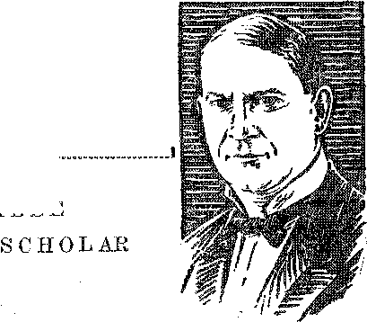

A JOURNAL OF 'E AND_ COURAGE
in this issue TELEVISION CASTIGATION OF AMERICA PARABLE OF THE WATER TANK ' WASTE AND POVERTY
' THE ALUMINUM PROBLEM
GARDEN OF DESOLATION LIBERTY IN LIBERIA THE CREATOR’S PROVISION FOR THE PEOPLE
smomosmMOOMimwwaimmHmmgmmmmMsmi every other WEDNESDAY
five cents a copy one dollar a year Canada & Foreign 1.25
Vol. XII - No. 304
May ,(3? 1931
CONTENTS
LABOR AND ECONOMICS
Unemployment Bound to Grow . 520
Welfare Agencies Ask for Help . 522
The Parable of the Water Tank 525
AGRICULTURE AND HUSBANDRY
Rice Growing in California . . . 519
Producing Rubber in California . 519
Range for Caribou in Isle Royale 520
SOCIAL AND EDUCATIONAL
New Coinage ........ 519
Prohibition as Cause of Crime , 520
Six Dollars a Bushel for Bye . . 520
Crime Business in St. Louis . . 521
Chicago Movie Censorship . . . 521
From the Korean Press .... 532
KDKA at Cresson Sanitarium . . 538
FINANCE—COMMERCE—TRANSPORTATION
219 Directors Do It All . . , . 519
384,000 Road Hogs ..... 522
About Railroad Passes .... 537
POLITICAL—DOMESTIC AND FOREIGN
A Castigation of America . . . 518
Raton Owns Its Light Plant . . 519
General Assembly of Pennsylvania 521
Martial Law in Cuba .' . . . ‘ . 523
Wholesale Management of
Retail Stores C ...... 523
Clerk Hire in Washington . . . 524 . Wanton Waste and Pitiful
Poverty ........ 529
Liberty to Preach in Siberia . . 538
SCIENCE AND INVENTION
Getting Ready for Television . 515
Europe Making Structural Glass 520
The Radio Teletype ..... 521
First Work at Hoover Dam . . 524
HOME AND HEALTH
100.000 Injured in Bathrooms . 521
U.S.A. Pneumonia Death Rate . 523
Nick Longworth Is Dead . . . 528
Mental Health and Sanity . . 530
An Outline of Osteopathy . . . 531 A Cheap and Good Baking Powder 532 “About the Aluminum Problem” 533 “Cardlic Trouble” Killed Him . 534
TRAVEL AND MISCELLANY
Nature's Garden of Desolation . 535
Extracts from Interesting Letters...... . 539
RELIGION AND PHILOSOPHY
To Make Whoopee in Choir . . 529
Prayed to the Infant Jesus . . 539
The Creator’s Provision foe the
People ......... 540
Big Business Broadcasts Religion 543
Published every other Wednesday at 117 Adams Street, Brooklyn, N. Y., U. S. A., by WOODWORTH, KNORR & MARTIN
Copartners and- Proprietors Address: 117 Adams Street, Brooklyn, NT. Y.f U. S. A. CLAYTON J. WOODWORTH ., Editor ROBERT J. MARTIN .. Business Manager NATHAN II. KNORR .. Secretary and Treasurer
Five Cents a Copy—$1.00 A Year Make Remittances to TKR GOLDEN AGE Notice to Subscribers: For your own safety, remit by postal or express money order. We do not. as a rule, send acknowledgment of a renewal or a new subscription. Renewal blank (carrying notice of expiration) is sent with the journal one month before the subscription expires. Change of address, when requested, may be expected to appear on address label within one month.
Translations published in Finnish, German, Norwegian, Polish, and Swedish^ Offices in Othek Countries
British........... . 34 Craven Terrace, London, W. 2, England
Canadian....... .... 40 Irwin Avenue, Toronto 5, Ontario, Canada
Australasian ....... 7 Beresford Rd., Strathfield, N. S. W., Australia South Africa ............ 6 Lelie Street, Cape Town, South Africa
Entered as second-class matter at Brooklyn, N. Y., under the Act of March 3, 18T0«
Volume XII Brooklyns No Y.s Wednesday, May 13, 1931 Humfeer 304
EVERY few days a newspaper states that radio station so-and-so is getting ready to broadcast television programs, and the public takes it all as a matter of course without even faintly comprehending all that is taking place in the field of science and that must take place before such a marvel can occur.
■ Events are monng too swiftly in the television field for us to gain a very clear idea of what is happening. No doubt some of our subscribers are experts in that field. If so, they will please be patient while wTe try to tell our readers something about an art that is developing before our eyes with lightning-like rapidity.
Few* ever stop to think about the billions of television systems that the Creator has in operation throughout the earth. That is what an eye really is. Only, instead of a presently cumbrous system of 2,500 wires, it has more than a million nerve fibers, each of which carries light impulses to the brain. The result is that we see vv’hat happens at a distance.
In motion pictures the eye is deceived. Pictures, one “still” or fixed view, then another view’, and another, are presented before the eye so fast that the rapid succession of the many view’s seemingly forms one view- and the impression of motion is obtained. The same thing happens in television, which is a series of spots of light flashing on and off, but each spot maintains its effect on the eye long enough for the brain to comprehend them as an organized picture. ...
Television naturally divides itself into many fields, still life in black and white, still life in colors, moving scenes in black and white, moving scenes in colors, moving scenes synchronized with sound, and combinations of these. Each of these fields presents great problems if sent over a wire, and still greater problems if sent by radio.
It was found in 1873 that selenium changes its resistance when light rays fall upon it. This discovery has stirred inventors all over the world, because it opens the door to translating light values into electric currents, the same as is done with sound, both over the telephone and over the radio.
What Television Is
Television is the transmission of a picture a dot at a time. Did you ever take a coin, place a sheet of paper over it, and rub it with the butt end of a lead pencil ? Little by little you get the picture which is on the coin transferred to the paper. That is what television does.
With a point of light successive parallel lines are drawn across a picture until the whole is covered. This is done at the rate qf 50,000 light points a second. Each dot is in its exact place. There cannot be an error of one hundred-thousandth part of a second in time of sending.
The lines and colors and contours cause variations in the brightness of the spots they reflect. By means of the photo-electric cell, these variations are turned into variations of electrical current. This current is amplified five quadrillion times before it is strong enough for the work required. The current is a flying picture. Every change in volume is a feature of a scene or portrait. The receiving apparatus reverses the process.
It is only four years since the picture of Mr. Hoover was televised from Washington to New York and the president of the American Telephone and Telegraph Company looked him in the eye as he talked with him. Europe claims to be two years ahead of America in television development. .
The picture to be televised is divided into 2,500 sections, each section of which is visited by the light pencil about eighteen times a second. At the receiving end are 2,500 wires connected with that many squares of tinfoil. When the fragment of a picture reaches one square of
tinfoil if leaps from the tinfoil to a wire through neon gas, and the flash is strong or feeble according to the light or shadow on one particular part of the scene. These tiny flashes build up the picture on the screen.
Up to June, 1930, a television receiving apparatus would fill a good-sized bathroom, and required an operator to regulate the apparatus of sight and sound. To maintain it in a home one would have to pay for about 35 telephones. Since that time the television receiver is said to have been much simplified and can now be housed in a cabinet about 3 feet wide, 2 feet high and 1 foot thick.
The best that can be done so far is crude, but the public seems perfectly confident that perfection, or substantial perfection, is ahead, and those able to speak with some knowledge of what they are talking about expect that in five years the ordinary citizen’s eye may be carried from his home all over the country as his ears are now.
Incidentally (and here is something for Dad to worry about), the radio receiving set. and the television receiving set. will probably have to be separate, because sound broadcasts employ long-wave channels, while television images travel on short waves.
The Theater First
Television programs have already been broadcast to and received by theaters. In Schenectady, in June, 1930, orchestral numbers and vaudeville acts were televised by radio for a distance of over a mile. These were reproduced in images six feet scpiare which were readily visible to the entire audience.
At first it was thought that it would be necessary for television actors to carefully paint eyebrows and lips, and that only persons with strong faces could be used in the scenes, but it is claimed that this is no longer required. The first sight-sound dramatic production wras televised in January of this year. Everything possible was done to exclude noise. The actors played in their stocking-feet.
Facsimile transmission of photographs, pictures, drawings, typewritten documents or manuscripts may now be had between important cities of England, France and Germany, and a regular service has been established between England and Germany. The Germans are also transmitting weather maps to planes in flight, and maps of emergency airports may also be transmitted to aviators while they are on the wing.
In May, 1930, John Hays Hammond announced that his engineers had made an application of television to the airplane which enables the pilot to actually visualize the scene below him on a screen placed ahead of him in the cockpit/and this regardless of fogs or storms or darkness. According to the account, the aviator sees a speck moving across a map, indicating his exact position. An arrow pointing from the speck indicates the direction in which he is flying, another arrow his altitude, and another the wind velocity.
In April, 1930, it was announced that twoway telephone television is now possible, the head and shoulders of each speaker being visible to the other. A special booth is necessary for this. Instead of the familiar mouthpiece one talks through a microphone which, however, is out of sight. The conversation seems to be addressed direct to the image, which is about like that of a person ten or twelve feet away, and the sound is adjusted to conform to that impression. In January, 1931, a twowvay television-telephone social affair was arranged by the Bell Telephone Laboratories for some forty women, each of whom made use of the new device.
Some &f the Problems
Distance is one of the problems that make television difficult. Although the British claim that their telephone system is the best in the world, the lines were not made for carrying electrical frequencies as high as are required for television, and thus a difficulty of mechanization is presented.
Photography is not up to the requirements. Today it is impossible to take pictures of every minute of a football game; and if the pictures cannot be taken at all, then certainly they cannot be televised. It is likewise impossible to take a film of an ordinary stage performance, because of inadequate light.
When it comes to televising by radio, there are the problems of static and fading. As one of the television experimenters puts it, “To send television images through space today is like expecting a brook to run through a populous area clear and uncontaminated.”
When television goes into the homes it is expected that most of the broadcasts will be made from films. That may be some years away yet. C. AV. Horn, radio engineer, says, “The present state of development of image broadcasting I do not believe to be any nearer real television than that well known old-fashioned booklet composed of a number of drawings, each a little different from the other, is to our motion pictures today.”
At first the television images were very small. Those in color, when first made, were only about the size of a postage stamp. Gradually the size has grown until now televised action can be projected on screens of the same size used for motion pictures. The faces that travel through space are also becoming clearer.
Referring to possibilities for the future the General Electric Company bulletin says: “You can put an electric eye wherever you wish and you can see through this eye just as if you were there. An airplane with a news reporter will fly to see whatever is of interest, and the whole theater audience will be with him, seeing what he sees, and yet the audience will be perfectly safe and comfortable.”
The Federal Radio Commission has set aside five specific bands of frequencies in the shortwave spectrum for television experimentation. Each of these is 100 kilocycles wide, or ten times the width of the ordinary broadcast channel. One of them is shared with Canada.
Television in Colors
Three groups of photo-electric cells are used for color television, one covered with red felts, one with green and one with blue. Colored television has been by wire, but could be employed by radio if separate wave lengths were used for each color. It is still a one-way affair. It was first demonstrated at the Bell Telephone Laboratories in New York, June 27, 1929.
In August, 1929, a talking film was transmitted by television in London. The televising of a film was also done in Berlin. The Baird Television Development Company of London, managed by John L. Baird, a Scotsman, is. playing an important part in the development of the art. Mr. Baird has shown pictures two feet by five feet. His screen is of ground glass behind which are over two thousand small bulbs. It is these bulbs which, “lighted” in turn, reproduce each an element of the visual image they together build up.
Scores of engineers are working feverishly at the television problems, in all parts of the world. They know that when it is perfected it is going to be exceedingly valuable to advertisers, who will pay most of the cost of what is broadcast.
It is claimed that for months there has been an uninterrupted two-way 24-hour-a-day television test between New York and the plants of the Television Laboratories, Inc., of California, and that these people have a tube development which makes television on a commercial scale immediately practicable. It is further said that they will make television sets for the home which will cost about $600 each. It is also said that it will be possible to broadcast but. five television programs at one time and that the company is now buying up control of 51 percent of the broadcasting stations utilizing the five vital bands used in television work.
There are at present twenty-four licensed television stations, and seven under construction. Regular daily visual broadcasts were begun February 23, 1931, by the De Forest superstation, W2XCD, at Passaic, N. J., with a nationwide television audience of more than 10,000 receivers. That looks as if television was coming, does it not? Selfridge’s department store in London has opened a department for the sale of television experimental apparatus.
What of the Future?
For fifteen years radio .was merely an auxiliary of navigation. Now look at it. In 1915 nobody ever imagined the present uses of radio. Twenty-five years ago Prof. Ayrton said, “The clay will come when, with an electric voice, you will be able to call your friend in any part of the world.” Today that is an accomplished fact. Radio telephony is a world-wide service.
In 1922 George Bernard Shaw had on the stage a play showing a scene in the British Isles in A.D. 2170. The president of the republic turned a dial and on the screen saw the dainty bedroom of the handsome Negress who was minister of health in his cabinet. He apologized for the intrusion. That was only nine years ago, and today the thing is possible. Indeed, Dr. Furse, bishop of St. Albans, recently said, jokingly, “I view with great trepidation'the coming of the day when by television my morning ablutions will be reflected on the screen in New Yorii for the entertainment of the American public.” There is much yet to be done and much to be overcome. Pictures must be made larger and clearer, and receiving apparatus must be made
518 -- QOLDEN AQE BM0Kra- N. y.
fool-proof, and all these things will take time, but it is certain that the time will come when living pictures, taken in broad daylight, will roam the air, accompanied with music or words or both, and in colors, ready to be picked up for the entertainment and education of man where-ever he may chance to live.
Without a doubt in the world the "princes in all the earth” will have at their hand, all ready for their use, all the apparatus they will require wherewith to direct the affairs of earth, and it is all coming about in a way so simple and natural as to ‘deceive, if it were possible, even the very elect’. Many men give all the credit for these marvels to the wisdom of men, not seeing the great truth that they are in very deed and in very truth the hand of God preparing the earth for the perfect administration of truth and justice and wisdom and love in the Kingdom we now announce as begun.
A Castigation of America By Samuel Unlermyer
[From an address before the Los Angeles University Club]
«miIEEE comes a time when some one should undertake as a public duty this wholesome and ungrateful task.
“Ours is the veritable paradise of the demagogue and ignoramus in public life. Our standards of public service are so perverted that true statesmanship rarely dares assert itself if it runs counter to the public delusion of the moment.
“I venture to assert that on the whole a more generally untrained body of national, state and local legislators and one of lower intellectual standards is not to be found in any civilized country on earth.
“The anti-trust laws of today are, in a less sensational way, as much of a reproach to our administration of justice as the prohibition law, which has failed of its purpose and proved an overwhelming disaster. Monopolies have now accumulated and buried their tentacles so deeply into our economic life that any genuine attempt now made to enforce those laws would lead to a cataclysm in the business and financial world. The truth is that the influence of these great law-breakers, exerted on one administration after another, has proven irresistible.
“The most vicious and demoralizing effect of the now grotesque prohibition law is that it has converted law-abiding citizens by the millions into hypocrites and potential criminals. It should be wiped from the statute books with as little delay as possible if we are to rescue a vestige of our self-respect in the eyes of the world. By every rule of a moral code, a purveyor of liquor is no more a criminal than is the buyer.
“The anti-trust laws constitute another of our economic follies which we persist in retaining upon the statute books.
“The Sherman law has been on the statute books for over forty years. Spasmodic and unequal efforts at enforcement in isolated cases have served only to demonstrate that the powerful offenders against the law are stronger than the courts or the government, and so for every violator who has been prosecuted hundreds, perhaps thousands, have cropped up and are now operating and growing stronger and stronger in open defiance of the law.
“The only serious attempts at enforcement have been in the assaults on organized labor, to which the law was never intended to apply.
“The greed of the power trusts is shaking at the very foundations of government. We have the most striking instance of this desperate, unequal struggle at the moment in my own State of New York between Governor Roosevelt and the most formidable power trust on earth.
“'A struggle is raging in Congress and all over the country between government and these fabulous and perilous power combinations that are spreading their poisonous tentacles all over the land, undermining and shaking the very foundations of government. The evils of the industrial trusts that have conquered us, as compared with the operations and effects of this form of legalized banditry, are ‘as moonlight unto sunlight and as water unto wine’. Is their conquest to be added to the long list of America’s follies? We shall see.”
New Coinage
Improved Air Service to Boston
TT IS now possible every two hours from 9:15 a. m. to 7:15 p. m. to go from New York to Boston. The trip takes two hours and includes a stop at Hartford. There has been a service from New York to Washington every hour, on the hour, for some time.
Blood Sellers in New York
ACCORDING to the health authorities there are now 8,000 persons in New York who are trying to make a living by selling their blood for transfusion purposes. The number is three times what it was a year ago. The hard times are offered as an explanation. The blood sellers must be licensed.
Land Owners and the Red Cross
CRITICS have noticed that the large land owners of Arkansas are chiefly the ones holding the highest positions in the Red Cross organization, and that the common people now on the verge of starvation because of the unfavorable conditions under ■which they have worked in years past are now actually dependent for life itself upon those to whom they owe most of their miseries.
Wpes Off $400 a Family in 1930
OWING to unemployment the wage bill of the United States fell off 21. 5 percent in 1930, or a total for the country of $9,600,000,000. This figures out about $400 a year for every family in the country. What would your family have done if they had had $400 more to spend last year ? The money would have been expended for necessities, comforts and conveniences, and business would have been good.
Inefficiency of Efficiency Experts
A WRITER in TNT tells of a concern paying workers $3.30 a day. Two efficiency experts were put on to stpdy the men, one at $150 a week, the other at $90. In due time the workers were all put on piece rates which made it necessary for them to work at top speed to make $2.50 a day. The result was that in three months’ time every experienced man was off the job. ..The efficiency experts had ruined the job for everybody.
21S Railway Directors Do It 'All
TJRACTICALLY ail the railroads in the
United States are run by 219 directors, all associated with the big financial groups. These directors hold 2,298 directorships on the fifteen most important railroads in the country.
Must Curtail Wheat Production
nPHE Federal Farm Board has warned that -*• wheat production must be cut 25 percent or government stabilization operations cannot continue. Meantime there are millions of hungry in the great country of China and all around the globe who need the food which America can so well supply. And there are hungry people in America too, lots of them.
Rice Growing in Northern California
THE banner rice-growing district of the United States is now in Butte county, northern California. The district contains 18,000 acres, and is fertilized and planted by airplane, the fertilizer used being ammonia sulphate. The harvest runs about 40 sacks pf grain to the acre, 100 pounds to the sack. The growers have recently bought for $500,000 the irrigation system they have been using for several years.
Producing Rubber in California
FOB many years Mexico has made rubber from the guayule (gwy-oo-lay) weed. This weed has now been acclimated in California, 6,000 acres of it are growing near Salinas, and in season 15,000 pounds are gathered daily. The rubber is turned out in 200-pound blocks only four hours after harvesting. If prices are unattractive the plant can be left growing in tire ground for another year.
Raton Owns Its Light Plant
RATON, New Mexico, owns its own lighting plant and is glad that it does. Last year, after paying all expenses, including interest on bonds, the city had a net profit of $35,358.68. All this money, and more too, would have gone to the Wall Street crowd if the people of Raton had been willing to heed the cries of purchased college professors and bought newspapers. The Power Trust tried to get the plant, but the people of Raton were too well posted.
West Virginia Miners 'Ask State Relief
WEST VIRGINIA miners have sent a deputation to the governor of their state asking for an appropriation by the state to keep them from starving. They claim that their present distress is due not only to the depressed conditions of the coal industry but to inadequate -wages to those employed.
Unele Sam Will Pay Fair Wages
ANEW law provides that on -work for Uncle
Sam, if the contract runs to more than $5,000, the wages paid by contractors must be the prevailing rate in the locality in which the work is done. The final determination as to what is the prevailing rate is to rest with the secretary of labor.
Noise Abatement in New York
GRADUALLY the Noise Abatement Commis
sion is accomplishing results in New York and the city is becoming noticeably a better place in which to live. The manufacturers of auto-horns have been prevailed upon to produce a less objectionable type; the number of outdoor loud-speakers has been reducedj the vessels in the harbor are not so noisy. This is all much appreciated.
Prohibition as a Cause of Crime
IN New York city the Wickersham investigators found that 93 percent of all criminal cases were connected with the prohibition law or its attempted evasion. It has been found in both New York and Chicago that racketeering begins by collecting from beer runners and speakeasy proprietors and ends by collecting from every business that can be intimidated.
Six Dollars a Bushel for Rye
SIX dollars a bushel for rye I You mean sixty cents, do you not? No I Rye flour, when it is macle into bread, sells in Chicago and Minneapolis for six dollars a bushel of its flour content.' But what does the rye sell for before it is made into flour and then into bread ? Oh, on the future market it is selling for 40c a bushel. That is quite a difference, between $6.00 a bushel and 40c a bushel, is it not? Yes, a difference of $5,60. Who gets the difference ? Ask the man who gets it, not us.
Range for Caribou in Isle Royals
LOVERS of nature will be glad to know that
the largest island in Lake Superior, Isle Royale, is to be made into a national park in which 400 caribou, 2,000 moose, and other wild animals can range perpetually through primeval forests and among some of the prettiest little lakes on the continent.
1931 a Good Year for Radio
RADIO reception this year is counted as two to five times as good as a year previous, and is still improving. The difference is due to absence of spots on the sun, and it is anticipated that radio reception will continue to improve until the spring of 1933, when it is due to begin to go the other way while the sun spots are coming' back into prominence.
Europe Now Making Structural Glass
EUROPE is now’ making structural glass bricks and building blocks, and they have been used in the construction of a railway station and an aii'plane hangar. The building blocks are in. vacuum form, effecting some heat and sound insulation. These blocks have recently been imported for some jobs in New York and one in the Middle West.
Old Age Pensions in Salt Lake County
IN SALT LAKE county, Utah, charity payments were $4,000 less than during the year previous. This is most unusual, in view of the general increase of 45 percent the country over. The reason assigned is that they have old age pensions in Salt Lake county, and the old age pension tends to keep people going on their owm resources who would otherwise give up the fight.
Unemployment Sound to Grow
IF PRESENT most efficient methods of operation were everywhere in use 25,000 blast furnace workers could be laid off, and so could 247,000 sawmill w’orkers, 330,000 coal miners, 119,000 boot and shoe workers, and 4,600,000 farmers and farm laborers. Present conditions are bound to force greater efficiency in all these businesses. Hours of labor must go down and wages must go up if general prosperity is to return. Otherwise, unemployment is bound to increase.
Revival of Hebrew in Palestine s
ONE of the world’s most interesting experiments in philology is the revival of ancient Hebrew in Palestine. The Bureau of Jewish Education now maintains nine afternoon schools where all the studies are in the original Hebrew. Songs are sung, games are played and plays are staged in the tongue of Abraham, and it xvi.ll not be long now before he will be in 'Palestine himself to enjoy it all.
Crime Business in St. Louis •
THE crime business in St. Louis is getting down to a fine art. In May the Grand National Bank was looted of $822,000 worth of bonds. After nine months the bonds were returned through a bondihg company for a reward of $140,000. Neither the St. Louis police nor the 'district attorney knows who the robbers are or the intermediaries through whom the loot was returned. Clearly this is compounding a felony and encouraging crime.
Facts About the Hard Times
Y MEANS of a questionnaire sent out to 127. municipal officials The Nation has ascertained that, in spite of continued optimism at Washington, unemployment continues to increase, that pay rolls have been slashed, that private charity is unable to cope with the present emergency, that public vrorks construction has proven inadequate to relieve the unemployment strain, and that few public men have any idea at all as to how to deal with the problems of unemployment and relief. They are at their wits’ end.
The General Assembly of Pennsylvania
usjice Kephart, of Philadelphia, gives an illuminating picture of the General Assembly of Pennsylvania at Harrisburg. He says:
Human whips are on guard to make certain, that no legislation freeing the people from taxes or oppressive laws be enacted. Hypocritical crooks claiming to represent the religious and moral forces of the community are naught but sacerdotal blackmailers who represent none but senile old fossils long removed from pulpits. These grafters have driven millions of men out of the churches, and now, from the pulpit, comes the universal cry for men in the pews, but no men respond and none will so long as the church is used as a ballyhoo for grafting fakers pretending to speak with authority for the religious and moral forces of the community.
Junkers Freight Car of the Air
COHERE are 28 cubic yards of space in the freight section of the Junkers special plane now building. It is calculated that three tons of freight can be carried, besides passengers. If one of these planes, when it is well loaded, hits a man’s house from about a mile in the air there will be no need for wrecking crews or undertakers. Everything will disappear beneath the cellar floor.
100,000 Injured in Bathrooms
THE facts seem to show that the bathroom is one of the most dangerous things with which we come in contact. Every year 100,000 persons are overcome and drowned, after eating a heavy meal and then taking a bath too soon afterward, or by touching electric fixtures while bathing, or by going to sleep and drowning, or by being scalded, or by stepping- on wet soap, or by heart shock from jumping suddenly into a tub of cold water.
The Radio Teletype
THE teletype which, a few months ago, we were told could transmit and receive messages over the telegraph wire, the service in both directions being by typewriter, has now been applied to the radio, and the sending set is said to weigh less than 20 pounds. The statement is made that with multiple variations in shortwave radio impulses, every owner of a sending and receiving apparatus can be independent of all others, and that such connections can be made as to prevent any other owner from cutting in on messages sent by another person.
Chicago Movie Censorship
IN ONE year the Chicago censorship board eliminated from motion pictures 1811 scenes of assault with guns with intent to kill, 175 scenes of assault with knives with intent to kill, 129 scenes of assault with other weapons, 231 scenes of hanging, 173 scenes of horror, as clawing out eyes and biting off ears, 757 scenes of attacks on women for immoral purposes, 929 scenes of nudity and semi-nudity, and 31 scenes of jail-breaking. And look at what they left in! In one year the Chicago censorship board made 6,470 cuts from films in the effort to eliminate much tending to incite to crime, or indecency, or obscenity, or immorality.
Jfan Not So Much Stronger
AI THE moment of birth 100 boys ’die to every 80 girls. In infancy 50 boys die to every 41 girls. At 50 years of age half the males are dead, while of the females half are still living at 57. In India, trained for the work, the women are said to carry or haul as much as two men. Woman has greater fortitude against pain, and lives on where a man gives up and dies. The women are not so weak as the men think they are.
Children of Mexican Parents Starving
MUCH of the farm and railroad and other heavy work of the South and West is done by Mexican labor, which is not overpaid for the work it does. For the past year or more work has been scarce and these poor laborers have not been able to provide food for their loved ones. The situation came to a head at El Eio school, near Oxnard, California, when a child fainted from starvation and an investigation disclosed that many of the children in the school, mainly of Mexican parentage, were in the same condition.
Spiritism over the Radio
REFERRING to the wave of astrology, necromancy, palmistry and kindred subjects which has recently been flooding the ether from multitudes of radio stations, a writer in the New York American says: “With prosperity, people let go of superstition, but in adversity they grasp for any straw, like the proverbial drowning man. The minute disaster comes many sensible men and women are attracted by the mysticisms of the savage. In times of stress civilization shows it has progressed very little from ancient necromancy.”
Insurance Business the Next to G&
HE insurance business is to be the next to go the way of all other business. Sears, Roebuck &> Company have organized a new company that will undertake the selling of automobile insurance, to be followed later by other lines. As a starter they propose to sell automobile insurance at 20 percent less than other companies, and that will be bad news to many in the insurance business. One by one all businesses necessarily gravitate toward the one ultimate business, and nothing can stop this centralizing process. In the end the Lord will own that business and operate it for the benefit of the people.
384,000 Road Hogs
WE DO not say that among the 25,000,000 automobile drivers in the United States there are only 384,000 road hogs, but there is no doubt that there are at least that many. That is the number of persons who caused automobile wrecks last year by refusing to give the right of way to the car that should have had it, or who exceeded the speed limit, or who drove on the wrong side of the road to the injury and damage and death of others.
New York Welfare Agencies Ask for Help
ONE THOUSAND representatives of welfare and relief agencies of New York city have asked the city administration to appropriate $10,000,000 to provide jobs for unemployed heads of families. The resolution, which was voted unanimously, stated that the number of idle and part-time workers in the city is equivalent to 750,000 totally unemployed. The $8,000,000 given by private citizens and corporations has been exhausted.
Power of Flowers
CINCINNATI recently had a National Flower and Garden Show. A million flowers were on display: tens of thousands of school children came to see the exhibits; not a flower was stolen. Crime among florists is almost nonexistent. Here is a good point for criminologists. A man may be helped by being put to raising flowers; he is not much helped by being locked behind iron bars and made to associate with the outcasts of society. The Biblical plan of a city of refuge for misdoers was far better than the idea of dungeons and iron bars could ever be. The city of refuge gave the misdoer a chance.
$200 Coffin for a Monkey
LONDON dispatch states that in that metropolis a highly trained monkey named Dodo was buried in a coffin costing $200. And then the dispatch was mean enough to add, “’Chicago papers, please copy.” Now, isn’t that mean? The only chance a Chicago racketeer has to be decent or to make any kind of showing that will really appeal to magistrates, detectives and others with whom he has associated is at his funeral, and nowr the Londoners want to put him in competition with their dead monkeys. How discouraging a thing like this must be to even the vice king himself I
Marital Law in Cuba
UBA is practically under martial law most of the time of late; The president, Machado, first had his term lengthened to six years, and then was reelected for a like term. His concern supplies ail food for hospitals, penitentiaries, army, navy, and has a monopoly on flour and bread. Requests have been made to him to resign. Students and newspapers consider him a menace’ to the well-being of the country. Troops are used to put down every expression of discontent. The troops are paid regularly and treated well. The money to pay them comes from Wall Street. These items are the gist of an article in The Nation on the subject.
Wholesale Management &f Retail Stores
TN THE wise effort to keep from being swal--*• lowed alive by the chain stores some wholesale concerns today are hooking up with large numbers of independent grocers, teaching them how to keep their stores clean and well lighted, their windows trimmed, their stock in order, and how to advertise. These independent merchants may have uniform signs, but on each sign is the name of the proprietor. The retailer still owns his store, and the wholesaler still has his own business. Such a development is taking place in New York among the colored merchants of Harlem. There are already twenty-five members in the Colored Merchants’ Association, including two model stores.
Stealing Cattle Wholesale
THE old-style cattle rustler drove his cattle away on foot and, when he was caught, argued the matter out with his gun. Times have greatly improved. By the new method twenty-five or thirty head are picked up, put on a high-poriered motor truck, and the next morning are disposed of at a market that is far away. But all this is crude as compared with the beautiful hold-up job that is being done by the Power Trust. What are even twenty-five or thirty head of cattle, stolen only once in a while, as compared with taking regular monthly tribute from millions of people, charging them thirty times the cost of the current they consume, and then' even having the nerve to increase the rates to the poor and lower them to the rich under the various service charge, room charge, or outlet charge schemes that have been evolved as instruments of oppression of their fellow men?
Fann Board’s Loan to the Grape Growers WE ARE not complaining about the Farm
Board's loan of $20,000,000 to the grape growers of California, nor to the plan under which these growers sell their grape concentrates throughout the country with a guarantee that they will develop a ‘kick’ or the money will be refunded. Anybody can see that the growers of wine grapes have got to be helped or go out of business. And if the government wants to get its money back it must help them market their product, which, by the way, produces wines rating 20 percent alcohol. The government is putting up a wonderful fight on this prohibition, question, yes.
Too Many Lutheran Ministers
THE Lutheran church has come out definitely and stated that there are too many Lutheran ministers. We .knew it all along. Not only that, but there are too many Methodist ministers, too many Baptist ministers, too many Presbyterian ministers, too many Catholic priests, too many nuns, too much of all this kind of thing altogether. But there are not too many Christians. The Lutherans that are now being ousted from the ministry, or from the chance of getting into it, can take heart. In the ministry they would be of no use to their fellow7 men. They would only be a drawback. History has proved that. But as plain Christians they might be helpful to somebody.
U. S. A- Pneumonia Death Rate
REFERRING- to the fact that the United
States army lost 45,000 men by pnemnonia in 1918, Dr. Wilbur J. Murphy, M.D., in The Open Door for February, 1931, said:
The high death rate is due to the serum treatment of the disease, which burdens the kidneys with a toxemia that the pneumonia patient can not survive. If the patient with pneumonia were treated by measures that open up all the avenues of elimination, and individual symptoms were overcome by rational means, the disease would spend itself and the death rate would be 3 percent instead of 45 percent. Those who uphold and recommend the absurdities of serums and vaccines, uphold vivisection; and, as these products’ are bad from the start, they cannot become good in any branch of this debauchery of present-day medicine. I know of no other influence than Anti-Vivisection that is shedding light upon their failures, and there is a calm and great satisfaction that the just criticisms of their departures from sound medical practice continue to fall on fertile soil.
First Work at Hoover Dam
THE first work at Hoover Dam, the laying out of a construction camp, is under way, and by midsummer work will be begun on the construction of a double-track railway line from Las Vegas, Nevada, to the site of the dam. Most of this railway, which will be a hard-worked line until the dam, 727 feet high, has been constructed, will be carved out of the side of the canyon. It will be partly tunnel almost all the way from Las Vegas to the dam. After the railway has been built, the next big job will be the construction of the four diversion tunnels which will keep the 'water of the river off the site of the dam until it is finally let in behind the completed structure. There are already more workmen at Las Vegas than can find work on the job.
Hurrah for John Goodhouse, Justice!
ohx Goodhouse, Indian justice of the peace, in South Dakota, engaged in combat with a
white neighbor. After it was all over, and he had had time to think about it, he held court, fined himself $10, which he paid, and sentenced himself to thirty days in jail, which he served. What a splendid example he sets to the magistrates of New York city 1 If a lot of them would sentence themselves to Sing Sing as fourth offenders the city would be better off. And they could take some of the police with them, to advantage, especially those framers of innocent women and whoever it was that strangled the witness against them, Vivian Gordon, and incidentally caused her innocent daughter to commit suicide through shame. '
Clerk Hire in Washington
IT SEEMS that congressmen at Washington seem to find it very convenient to have near relatives as clerks. Thus, the daughter of one congressman, down on the records as clerk of the House, receives a salary of $3,900, but while she was getting this she was traveling in Europe. Another congressman, a millionaire, has a boy in ‘West Point and a daughter in Vassar, each of whom is on the government’s pay roll as clerk. The crooks anywhere will have to go some to beat that record. A Western congressman, a committee chairman, has on the pay roll a son, a daughter, and a nephew, and their combined salaries are $5,900. A Southern congressman has had $16,000 paid to his father, although he has never been in 'Washington. A further sample of some of the statesmanship at Washington lies in the fact that at the end of sessions of Congress some of these solons fire their clerks and turn over the clerk allowance to wives* daughters, sons or other relatives.
Thinking in Oregon
IT IS dangerous to read or think in Oregon.
Mike Kulikoff, eighteen-year-old schoolboy, was found reading books by Lenin. They not being able to send him back to Russia, he was rushed to jail, fingerprinted, and the next day, with no lawyer present on his behalf, the judge and a physician pronounced him insane, leaving the cause of insanity blank. He was again handcuffed and was then rushed to an insane asylum fifty miles away, where he was at last reports. The boy had never been in any trouble before; he had never committed any acts of force or violence; he had always attended school regularly ; and he had always lived at home. But he had been reading hooks not approved by some Oregon residents, and probably he had been thinking thoughts they would not approve, also. Now he is in the same 'ward with about fifty insane men, where he can continue thinking how crazy this world is.
Would Be Willing to Take Half
RADIO station has turned over to us a copy of a letter from a “Reverend” who signed himself with the initials B.A., M.A. and B.D. after his name. He asks for an audience of 100 physically blind, deaf, dumb, diseased, crippled or crazy, and says: “From my body, mind and spirit I can heal every ill person in the world who will tune in and cherish a dominant desire for satisfaction or health.”
It would take a page and a half of TJte Golden 'Age to list all the adjectives and high-sounding phrases with which he refers to his powers to heal at a distance, but it is not until you get dorvn to the end of the letter that you realize what it is all about.
The concluding paragraph says: “1 make no charge to you or to a long expectant public. However, the people are not to be denied the privilege of making gifts, one half of which can be retained by the station.” Ah, there is modesty for you! There is generosity! The dominie would not take it all; the station could have half. And if they got only $5 apiece it would help a lot on the price of meal tickets in these hard times.
The Parable of the Water Tank
[Reprinted from The Golden Aye No.
THERE was a certain very dry land, the people whereof were in sore need of water. And they did nothing but to seek after water from morning until night, and many perished because they could not find it.
Howbeit, there were certain men in that land who were more crafty and diligent than the rest, and these had gathered stores of water where others could find none, and the name of these mem was called '‘capitalists”. And it came to pass that the people of the land came unto the capitalists and prayed them that they wmuld give them of the water they had gathered that they might drink; for their need was sore. But the capitalists answered them and said:
“Go to, ye silly people! Why should we give you of the v;ater which we have gathered? For then should wTe become even as ye are, and perish with you. But behold what we will do unto you. Be ye our servants and ye shall have water.”
And the people said, “Only give us to drink and we will be your servants, we and our children.” And it was so.
Now the capitalists were men of understanding, and wise in their generation. They ordered the people who were their servants in bands with captains and officers, and some they put at the springs to dip, and others did they make to carry the water, and others did they cause to seek for new springs. And all the water was brought together in one place, and there did the capitalists make a great tank for to hold it, and the tank was called the “Market”; for it was there that the people, even the servants of the capitalists, came to get water. And the capitalists said unto the people:
“For every bucket of water that ye bring to us, that we may pour it into the tank, which is the Market, behold! we will give you a penny; but for every bucket that we shall drawr forth to give unto you that ye may drink of it, ye and your wives and your children, ye shall give us two pennies, ’and the difference shall be our profit, seeing that if it were not for this profit ?'■:> would not do this thing for you, but ye should all perish.”
And it was good in the people’s eyes; for they were dull of understanding. And they diligently brought water unto the tank for many days; and for every bucket which they did bring, the
(From Edward Bellamy’s ‘‘Equality”)
ISO, by request]
capitalists gave them every man a penny; but for every bucket that the capitalists drew forth from the tank to give again unto the people, behold! the people rendered to the capitalists two pennies.
And after many days the water tank, which was the Market, overflowed at the top, seeing that .for every bucket the people poured in they received only so much as wmuld buy again half a. bucket. And because of the excess that ■was left of every bucket, did the tank overflow; for the people were many. But the capitalists were few, and could drink no more than others. Therefore did the tank overflow.
And when the capitalists saw that the water overflowed, they said to the people:
“See ye not the tank, which is the Market, doth overflow? Sit ye down, therefore, and be patient; for ye shall bring us no more water till the tank be empty.”
But when the people no more received the pennies of the capitalists for the water they brought, they could buy no more water from the capitalists, having naught wherewith to buy. And when the capitalists saw that they had no more profit because no man bought water of them, they were troubled. And they sent forth men in the highways, the byways, and the hedges, crying, “If any thirst let him come to the tank and buy water of us; for it doth overflow.” For they said among themselves, “Behold, the times are dull; we must advertise.”
But the people answered, saying, “How can we buy unless ye hire us, for how else shall we have wherewithal to buy? Hire ye us, therefore, as before, and we will gladly buy water, for we thirst; and ye will have no need to advertise.” But the capitalists said to the people: “Shall we hire you to bring water when the tank, which is the Market, doth already overflow? Buy ye, therefore, first water; and wflien the tank is empty, through your buying, we ■will hire yon again.” And so it was because the capitalists hired them no more to bring water that the people could not buy the water they had brought already; and because the people could not buy the water they had brought already, the capitalists no more hired them to bring water. And the saying went abroad, “It is a crisis.”
And the thirst of the people was great; for it was not now as it had been in the days of their fathers, when the land was open before them, for every one to seek water for himself, seeing that the capitalists had taken all the springs and the wells and the water therein, and the vessels and the buckets, so that no man might come by water save from the tank, which was the Market. And the people murmured against the capitalists, and said: “Behold the tank runneth over, and we die of thirst. Give us therefore of the water, that we perish not.”
But the capitalists answered: “Not so. The water is ours. Ye shall not drink thereof unless ye buy it of us with pennies.” And they confirmed it with an oath, saying, after their manner, “Business is business.”
But the capitalists were disquieted that the people bought no more water, whereby they had no more any profits; and they spake one to another, saying, “It seemeth that our profits have stopped our profits; and by reason of the profits we have made, we can make no more profits. How is it that our profits are become unprofitable to us, and our gains do make us poor? Let us therefore send for the soothsayers, that they may interpret this thing unto us”; and they sent for them.
Now, the soothsayers were men learned in dark sayings, who joined themselves to the capitalists by reason of the water of the capitalists, that they might have thereof and live, they and their children. And they spake for the capitalists: unto the people, and did embassies for them, seeing that the capitalists were not a folk quick of understanding, neither ready of speech. _
And the capitalists demanded of the soothsayers that they should interpret this thing unto them, wherefore it was that the people bought no more water of them, although the tank was full. And certain of the soothsayers answered and said, “It is by reason of overproduction”; and some said, “It is glut.” But the signification of the two words is the same. And others said, “Nay, but this thing is by reason of spots on the sun.” And yet others ansAvered, saying, “It is neither by reason of glut, nor y7et of spots on the sun, that this evil hath come to pass, but because of lack of confidence.”
And ’while the soothsayers contended among themselves, according to their manner, the men of profit did slumber and sleep; and when they awoke they said to the soothsayers: “It is enough. Ye have spoken comfortably unto us. Now go ye and speak comfortably7 likewise unto this people, so that they be at rest and leave us also in peace.”
But the soothsayers, even the men of the dismal science (for so they7 rvere named of some), were loath to go forth to the people lest they should he stoned; for the people loved them not. And they said to the capitalists:
“Masters, it is a mystery of our craft that if men be full and thirst not, but be at rest, then shall they7 find comfort in e»r speech even as ye. Yet if they thirst and be empty, find they no comfort therein, but rather mock us; for it seemeth that unless a man be full our wisdom appeareth unto him but emptiness.” But the capitalists said: “Go ye forth. Are y7e not our men to do our embassies ?”
And the soothsayers went forth to the people and expounded to them the mystery of overproduction, and how7 it was that they7 must needs perish of thirst because there was overmuch water, and how there could not bo enough because there was too much. And likewise spoke they7 unto the people concerning the sunspots, and also wherefore it was that these things had come upon them by reason of a lack of confidence. And it was even as the soothsayers had said; for to the people their wisdom seemed emptiness. And the people reviled them, saying, “Go up, ye bald-heads! Will ye mock us? Doth plenty breed famine? Doth nothing come out of much ?” And they took up stones to stone them.
And when the capitalists saw that the people still murmured and would not gfive ear to the soothsayers, and because also they feared lest the people should come upon the tank and take of the water by force, they7 brought forth to them certain holy men (hut they were false priests), who spake unto the people that they should be quiet and trouble not the capitalists because they thirsted. And these holy men, who were false priests, testified to the people that this affliction was sent to them of God for the healing of their souls; and that if they should bear it in patience and lust not after the water, neither trouble the capitalists, it would come to pass that after they7 had given up the ghost they7 would come to a country7 where there should be no capitalists, but an abundance of water. Howbeit, there were certain true prophets of God also; and these had compassion on the people, and would not prophecy for the capitalists, but rather spake constantly against them.
Now, when the capitalists saw that the people still murmured and would not be still, neither for the words of the soothsayers nor for those of the false priests, they came forth themselves unto them, and put the ends of their fingers into the water that overflowed in the tank and wet the tips thereof. And they scattered the drops from the tips of their fingers abroad upon the people who thronged the tank, and the name of the drops of water was "'charity”; and they were exceedingly bitter.
And when the capitalists saw yet again that neither for the words of the soothsayers, nor for those of the holy men who were false priests, nor yet for the drops that were called “charity”, would the people be still, but raged the more, and crowded upon the tank as if they would take it by force, then took they counsel together and sent men privily forth among the people. And these men sought out the mightiest among the people and all who had skill in war, and took them apart and spake craftily with them, saying,
“Come, now, why cast ye not your lot in with the capitalists? If ye will be their men and serve them against the people, that they break not in upon the tank, then ye shall have .abundance of water, that ye perish not, ye and your children,”
And the mighty men and they who were skilled in war hearkened unto this speech and suffered themselves to be persuaded; for their thirst constrained them. And they rvent within unto the capitalists and became their men; and staves and swords were put into their hands and they became a defence unto the capitalists, and smote the people when they thronged upon the tank.
And after many days the water was low in the tank; for the capitalists did make fountains and fishponds of the water thereof, and did bathe therein, they and their wives and their children, and did waste the water for their pleasure.
And when the capitalists saw that the tank was empty, they said, “The crisis is ended”; and they sent forth and hired the people that they should bring water to fill it again. And for the water that the people brought to the tank they received for every bucket a penny, but for the water which' the capitalists 'drew forth from the tank to give again to the people they received two pennies, that they might have their profit. And after a time did the tank again overflow even as before.
And now, when many times the people had filled the tank until it overflowed and had thirsted till the water therein had been wasted by the capitalists, it came to pass that there arose in the land certain men vdio were called “agitators”, for that they did stir up the people. And they spake to the people, saying that they should associate, and then would they have no need to be servants of the capitalists and should thirst no more for water. And in the eyes of the capitalists were the agitators pestilent fellows ; and they would fain have crucified them, but durst not for fear of the people.
And the words of the agitators which they spake to the people were on this wise:
“Ye foolish people, how long will ye be deceived by a lie, and believe to your hurt that which is not? For behold all these things that have been said unto you by the capitalists and by the soothsayers are cunningly devised fables. And likewise the holy men, who say that it is the will of God that ye should always be poor and miserable and athirst, behold I they do blaspheme God and are liars, whom He will bitterly judge, though He forgive all others. How cometh it that ye may not come by the water in the tank? Is it not because ye have no money? And why have ye no money? Is it not because ye receive but one penny for every bucket that ye bring to the tank, which is the Market, but must render two pennies for every bucket ye take out, so that the capitalists may have their profit? See ye not how by this means the tank must overflow, being filled by that ye lack and made to abound out of your emptiness? See ye not also that the harder ye toil, and the more diligently ye seek and bring the water, the worse and not the better it shall be for you by reason of the profit, and that forever?”
After this manner spake the agitators for many days unto the people, and none heeded them, but it was so that after a time the people hearkened. And they answered and said unto the agitators: (>
“Ye say the truth. It is because of the capitalists and of their profits that we are in want, seeing that by reason of them and their profits we may by no means come by the fruit of our labor, so that our labor is in vain; and the more we toil to fill the tank the sooner doth it overflow, and we may receive nothing because there is too much, according to the words of the soothsayers. But behold, the capitalists are hard men, and their tender mercies are cruel. Tell us if ye know any way whereby we may deliver ourselves out of our bondage unto them. But if ye know of no certain way of deliverance, we beseech you to hold your peace and let us alone, that we may forget our misery.”
And the agitators answered and said, “We know a way.”
And the people said, “Deceive us not; for this thing hath been from the beginning, and none hath found a way of deliverance until now, though many have sought it carefully with tears. But if ye know a way, speak unto us quickly.”
Then the agitators spake unto the people of the way. And they said: . .
“'Behold, what need have ye at all of these capitalists, that ye should yield them profits upon your labor?' What great thing do they, wherefore ye render them this tribute? Lo, it is only because they do order you in bands and lead you out and in and set your tasks and afterward give you a little of the water yourselves have brought, and not they. Now, behold the way out of this bondage! Do ye for yourselves that which is done by the capitalists; namely, the ordering of your labor, and the marshalling of your bands, and the dividing of your tasks. So shall ye have no need at all of the capitalists and no more yield'to them any profit, but all the fruit of your labor shall ye share a.s brethren, every one having the same; and so shall the tank never overflow until every man is full and would not wag the tongue for more. And afterward shall ye with the overflow make pleasant fountains and fishponds to delight yourselves withal, even as did the capitalists; but these shall be for the delight of all.”
And the people answered, “How shall we go about to do this thing? For it seemeth good to us.”
And the agitators answered, “Choose ye discreet men to go in and out before you and to marshall your bands and order your labor, and these men shall be as the capitalists were. But behold, they shall not be your masters as the capitalists are, but your brethren and officers who do your mil; and they shall not take any profits, but every man his share like the others, that there may be no more masters and servants among you, but brethren only. And from time to time, as ye see fit, ye shall choose other discreet men in place of the first to order the labor.”
And the people hearkened, and the tiling was very good to them. Likewise seemed it not a hard thing. And with one voice they cried out, “So let it be as ye have said; for we will do it!”
And the capitalists heard the noise ©f the shouting and what the people said, and the soothsayers heard it also; and likewise the false priests and the mighty men of war, who were a defence unto the capitalists. And when they heard they trembled exceedingly, so that their knees smote together, and they said one to another, “It is the end of us!”
Howbeit, there were certain true priests of the living God who would not prophesy for the capitalists, but had compassion on the people; and when they heard the shouting of the people and what they said, they rejoiced with exceeding great joy, and gave thanks to God because of the deliverance.
And the people went and did all the things that were told them of the agitators to do. And it came to pass as the agitators had said, even according to all their words. And there was no more any thirst in that land, neither any that was an hungered, nor naked, nor cold, nor in any manner of want. And every man said unto his fellow, “My brother,” and every woman said unto her companion, “My sister”; for so were they with one another as brethren and sisters which do d’well together in unity. And the blessing of God rested upon that land forever.
Nick Longworth Is Dead
Nick Longworth, speaker of the House of
Representatives for many years, son-inlaw of Theodore Roosevelt, died of pneumonia. A half dozen doctors and trained nurses could not save him, but an osteopath or chiropractor would have done it without difficulty. Their success with pneumonia cases proves it beyond a doubt.
Wanton Waste and Pitiful Poverty By "J. G. Tope (Alabama)'
TODAY I visited a number of homes which were so destitute, dark and bare that words cannot describe them. No chairs to sit on; no carpets on the floors; not a window in the house; an old, dirty box for a table; beds not fit for human creatures to sleep on; and only corn bread and ’lasses to eat. This is pitiful poverty.
Tonight, in Arthur Brisbane’s column, I read of the appropriation by the United States Congress of one million five hundred thousand dollars for a home for our ambassador in Berlin, and one million two hundred fifty thousand dollars for a like mansion for the United States ambassador in Argentina. This is wanton waste.
In the poverty-stricken homes which I saw today with my own eyes, there were cracks in the floors half an inch wide; leaky roofs; single unweather-stripped walls, occasionally with newspapers pasted over the cracks; children, barefooted, and with scant clothing, hovering about a ramshackle of a fireplace, continually turning around to keep warm, in the dead of winter. How could anything but gloom, fear and trepidation be written on the faces of these poor unfortunates?
In one of these homes, or shacks, or hovels, or whatever they should be called, the children were parching corn; not as we parched corn in childhood, for pleasure, but for dinner, and to appease their hunger. In many of these homes, dinner time never comes, and a meal often consists of a sweet potato baked in the open fire, and broken and eaten from the hand without seasoning.
Compare this with, the thousands and tens of thousands of dollars required to furnish and equip these million-and-a-half-dollar embassies, and more thousands of dollars each year to pay for the extravagance and wanton waste in these palaces of luxury and idleness.
I have before me a newspaper clipping of recent date reporting the appropriation by the United States Congress of three hundred eighty millions of dollars of the people’s money to build battleships. Everybody knows that we do not need battleships: that airplanes coming in in the last few years have made battleships obsolete; that a fifteen-hundred-dollar airplane can blow a fifteen-million-dollar battleship to smithereens in five minutes, and the airplane is gone, good as new, but the battleship is gone to the bottom of the ocean; and that a fleet of airplanes could blow all the battleships off the sea in twenty-four hours. Why, then, build battleships ? Why this wanton waste ? I’ll tell you why. Wall Street made a bad investment in the shipbuilding industry. But Wall Street must never lose. So the men whom the people elect and send to Washington to protect their interests must appropriate three hundred eighty millions of dollars, at a critical time like this, for something we do not need, in order that the money men may make more millions. Is it any wonder we have hard times?
A lady told me today that her w’hole family had worked hard all summer, and had made nine and a half bales of cotton and a good crop of corn, but that the land owner came and took off all the cotton, locked up all the corn, and told them that they still owed him twenty dollars. Then she said: 'We have nothing. I haven’t even a decent dress, the children have no clothes or shoes, and we have nothing to eat.”
Of course, the land owner expects them to find work and make their living through the winter. But there is no work.
Thus we behold in these last days, wanton waste, and pitiful poverty. Is it not time for a change in earth’s governmental and social affairs I Surely the people need God’s kingdom.
To Make Whoopee in Clioir
A NEGRO resident of Paulsboro, N. J., having indiscreetly imbibed too much in the way of liquid refreshments, the mayor of that city has sentenced him to serve an indeterminate term in the choir of the Second Baptist Colored Church. Thus is revealed to us the happy combination by which a thirsty colored brother can get what he wants, and at the same time the village saints can be comforted and the pastor assisted, and the choir bills reduced. Why complain about the Volstead Act when it has such numerous advantages concealed within it? Why should the thirsty go mourning all their days when they can libate and be enthroned in the village choir? Echo answers, Why?
Mental Health and Sanity
A LADY who was a habitual patron of a certain physician in Indianapolis, one day up and asked the doctor if he would tell her really -what was the matter with her. The doctor in reply asked if she wished the truth. She exclaimed, “Certainly!” “Well,” said the medical man, “there is nothing wrong with you but your -mind. Get it on something noble and stop worrying about yourself and do something unselfish in behalf of others and you will be on the road to perfect health.”
The doctor had been reading one of the Bible Students’ books on “Creation” and was carried away, with its beauty and amazing purpose. He saw Jehovah was not a fiend who was going to torment the human race in endless torture, but rather had a deliverance and blessing awaiting them when he would bring them back from the grave. At once mental balance began to take place, reason became enthronfed, and a cheer took the place of an uncertain dread, while the entire future became rosy with hope by reason of contact with the Word of Life.
While so-called “Christian Science” has perverted entirely the saneness of a correct understanding of Holy Writ, as have the hundreds of others of Satan’s religions, it remains only for one to prove interpretations by exactly harmonizing them with every other inspired scripture. If they do not all correspond one may rest assured he has not the right thought, but rather a perversion of the great enemy of all righteousness.
Indeed Jehovah’s Word neutralizes error after the same manner of Job’s replies to his hypocritical friends. In every argument Job floored his incriminators with the sharp edge of truth until their fraud was exposed to all. Like- ■ wise, Christendom’s whitewashed claims to Christianity will be shown up to every beholding intelligence. Moreover, since the mind controls the body, it is easy to see that clear views of the Divine Doctrine must of necessity have a salutary effect upon the entire organism, even while under the regime of Satanism.
Chiropractors recognize this principle, inasmuch as they show on their charts the mental machinery controlling the whole human system, as the central telegraph exchange. When this greater chart of life (the Bible) is everywhere sanely known, it v’orit be necessary to put up signs reading, “Cheer up,” “Keep smiling,” etc. For then, it is written, “he that is of a merry [cheerful] heart hath a continual feast.” Again,
By Jos. Greig
it says-, Tn that day they wall not say, I am sick.’ Therefore, instead of arresting those who promulgate a knowledge of the great Creator and His unmatehable wisdom, they really should charge the state and nation for their services beyond the price of those “physicians of no value”, as they are, in truth, man’s faithful benefactors. When one goes wild and.blows off like a hot engine, saying all manner of evil things, it is self-evident he bears the stamp of mental sickness.
No wonder the doctor told the lady where her trouble lay, and -waited for a -wise moment to break the new’s in an acceptable way.
In conclusion, 'would say it might behoove us all to eat our mental food after the rules of nature in the physical realm, the order as heretofore published’in The Golden Age, to w-it, not to mix the starches, acids and proteins, so as to make non-nutri tion; for, as the authorities say, starches begin digestion with the saliva of the mouth, while the proteins need more emulsification in the stomach under the action of the gastric juice. Hence if we eat a balanced ration we experience only delightful rejuvenation of the body.
Likewise, if we have an intake of “meat in due season” from the mental table of the Lord, we feel, ourselves braced in the mind to meet the issues of life. And -we should be sure V’e are at the table of the Lord instead of the “table of devils”. The mixture from that table has already made countless wrecks in the overthrow of sanity and every good impulse. At present Jehovah’s table is bursting -with plenty and an abundance of wholesome, luscious fruit.
Some, like the prodigal, have already felt their home-sickness for their Father’s bounty, and have forsaken the husks of human traditions, and now feast with ever increasing joy at the lavish board of Him who is the giver of every good and perfect gift. None can be mentally healthy without this exhilarating viand of bubbling gladness, together with the 100%-true bread of life. Praise therefore to Him who provides such mental equanimity.
That mental giant, Paul, counsels us to have our senses exercised by reason of use, that we may be able to discern between good and evil, and to think on those things which are of good report, have virtue and exalt the Most High, Maker of heaven and earth, without whom no life could subsist. -
An Outline of Osteopathy
IN A LONDON law court the judge asked the question, “What is osteopathy ?” and while some amendment to the old saying, “as wise as a judge,” would seem necessary, there is no doubt that despite the fact that osteopathy and kindred systems of manipulative treatment have been practiced in this country for a number of years, the majority of people are ignorant of the claims made on behalf of these methods of treating disease.
A recent definition of osteopathy has been given that it is “that system of the art of healing which regards the structural integrity of the body as the most important single factor in the maintenance of health”.
Many of the methods which we today regard as scientific have had their origin in empiricism, and modern manipulative treatment is founded on the discoveries of the simple peasant “bonesetters” who treated the sprains and strains of the spinal column throughout many of the villages of Europe.
These simple people observed that, not only did their treatment relieve the strained or tired backs, but in many eases they exerted a favorable influence upon disease processes in remote organs and parts.
The credit for placing their discoveries on a scientific basis must be placed to the name of Dr. Still, an American, who founded the first college of osteopathy. It was about 1871 that Dr. Still, after many failures in the treatment of disease with drugs and surgery, propounded the theory that the body, within itself, had many of the necessities for the cure of disease, and as a result of his investigations proclaimed the famous slogan, “Perfect health can be attained only if there is perfect circulation.”
To understand the application of osteopathic treatment it is necessary to have some knowledge of the important part which the nervous system plays in the functioning of the body.
The human spine or backbone is composed of a series of small bones known as vertebrae placed one above the other and extending from the base of the skull to the hip bones, on which it rests. Passing through the center of the spine is the spinal cord. Bet'ween each two adjacent bones is a pad of cartilage, or gristle, which acts as a
Bg David 8. Christie {Scotland)
shock absorber and at the same time, with a number of strong ligaments, helps to bind the vertebra; together. Through openings between the bones of the spine pass the spinal nerves which unite the central nervous system with other structures of the body. It is upon the proper action of these nerves that health depends. When one or more of the bones of the spine becomes slightly out of position it presses upon the nerve and interferes with the passage of nerve energy over the nerve to whatever organ is controlled or regulated by the affected nerve. The organ is thrown out of harmony with the rest of the body, and is rendered weak and unable to resist disease. A simple illustration of the effect of nerve pressure can be observed in the case of the ulnar nerve. If it is pressed upon where it crosses the elbow the hand and forearm “go to sleep”; in other words, they become for the time being partially paralyzed. This is exactly what happens when a nerve is pressed upon as it emerges from the opening between the two vertebrae, with the essential difference that faulty functioning of the affected organ is not so readily traced as in the case of the arm and hand.
The Japanese knew of the effect of nerve pressure, and jiu-jitsu is the application of it to render the limbs of their opponents temporarily powerless. There is also a jiu-jitsu move whereby striking a blow with the knuckle on a certain part of the spine, the heart’s action can be seriously interfered with. This blow is not part of the usual system and is strictly prohibited in Japanese wrestling matches, although the administration of a certain move can restore normal functioning.
The osteopath endeavors to discover and adjust any displacement of the spinal column by means of various manipulative moves and so restore the normal flow of nerve impulse to the various parts of the body.
No single treatment is successful in every case, be it medicine, osteopathy, suggestion, hydrotherapy, or any other, but there is no doubt that there are certain cases where manipulative treatment has restored to health where other methods have failed.
Birds’ Armageddon in Korea
INCE the beginning of last January, in a district in Southern Korea, millions of bluebirds and sparrows gathered in the air of a mountain valley for a few days. On January 8 the great war began among them at 11:00 a. m. and continued until 4:00 p. m. During their fighting thousands of dead and wounded birds fell to the ground. Sparrows are the braver soldiers, because only one fell a,gain st three bluebirds, which have red dots around their bills. They seem to get ready for the last fight; for they do not scatter away, but rather gather together in the air. Curious to say, such a fighting had happened in 1893, just before the civil war broke out in Korea. Come what may, all these are the signs of the last day!
Korean Religious Shaking
On January 18, in Soonehun, Korea, more than ten Christians separated from their churches and, in the snowy night, breaking the ice with bare feet, symbolized themselves in a cold river. Their declaration is that the so-called "churches” are drunken with man-made laws, formalism and materialism which they think are not purely Biblical, so they want to separate from them and become true saints. They are going to preach earnestly. Most of them are from the Presbyterian churches.
Unbreakable Glass Is Invented in Japan
The glass wares now in use are very easily broken, even at slight collisions sometimes. A Japanese doctor in Osaka, Japan, has invented, another kind of glass which is not breakable even though it is thrown down on the ground with much force. But the weak point of the newly invented glass is that it is breakable at' 130° C. with moisture, and at 250°C. without moisture. Ere long the new glass wares will be sold in the markets. Careless people, be very happy; i/owr golden age, too, is at hand.
Korean Children Are the Second
The last December issue of the 'Korean Students in U. S. A. states that in Los Angeles the sagacities of the school children were tested there according to the nations and it was discovered that the Korean children came to the second place, especially in music, penmanship and industrial arts, and then in typewriting, history and English, while the Dutch children took the first place.
Praise Ye the Japanese Jurisdiction!
In the most enlightened city of Korea, Seoul, the children of school age for 1931 number 48,000, while the capacity of the class rooms opened to them will accommodate only 5,630; and even this can be done only by squeezing more pupils into the class rooms, not minding the welfare of their health; for they cannot build more class rooms, while there are plenty of rooms for the Japanese children.
Soy Beans as Fuel
Because of the pitifully low prices of the cereals in northern Manchuria there are carloads of soy beans and bean cakes left unbought and the people of the interior parts are burning 200 carloads of them daily for their fuel in their power houses, etc., though millions of their brethren are starving in the other parts of China. Is there anybody who would say they are not in need of the Kingdom?
A Cheap and Good Baking Powder By A. Sylvester (England)'
A S AN interested reader of The Golden Age from its first issue, I am certain that the exposures of aluminum as kitchen ware have been timely, and must be fraught with much good to those wdio discard its use as I have mine. I am offering to The Golden Age readers a recipe for baking powder which I used in my business for quite a number of years with good success, both for baking and for boiling or steaming, the latter requiring a little less. '
Quantities used per pound of flour: with white flour, one heaping dessert-spoonful; with whole meal flour, one and a half spoonfuls. This gives good results. Nov- the recipe: One pound rice flour, | pound bicarbonate soda, pound tartaric acid. Mix these well, passing through a fine sieve. This is very cheap and good.
“About the Aluminum Problem”
By Dr. von Puetensen, Official Doctor of the Palace of the Governor of Bavaria. [Taken from Deutsche Aerete-Zeitung, Berlin, Germany, December 14, 1930]
IT IS with undeniable merit that DAZ has presented the question of the harmfulness of aluminum cooking utensils and desires to test it thoroughly in its columns.
Beginning with its first announcement where Dr. von Halla made mention that aluminum utensils would dissolve, forming compounds of alum, thereby causing constipation (DAZ 95), interest in the question began to grow. An interesting essay was written by Dr. G. Touran (DAZ 221), where he pointed out that care must be exercised in using these utensils in the preparation of. sour foods. He cautions, above all, against the using of aluminum utensils in the handling of dairy products, the preparation of sour milk in the making of cottage cheese, etc. He also wmrned against the effects of using aluminum cans for canning food. He writes that the French have proved that in beef canned in aluminum cans amounts of aluminum from 1 to 145 milligrams in 100 grams would be found. He considers that the amount of aluminum consumed daily in food that has been prepared in aluminum utensils is 100 milligrams.
Tn DAZ 227, chemist Robert Burstenbinder announced (after my first announcement in No. 223, “About Aluminum in Common Salt Mixtures”) that aluminum hydroxid is less dangerous because water soluble, but that this water soluble aluminum hydroxid in connection with kitchen salt (Natrilliumchlorid) is much more dangerous. He demands that aluminum utensils should be used only in the kitchen, with the cooking of pure water, and be used for nothing else.
DAZ 231 brought an answer from Dr. Model-ich and carries my answer to him. Dr. Modelich is of the opinion that aluminum cooking utensils are absolutely harmless, and mentions that he has never observed any direct evil effects from aluminum although he practiced his profession for eleven years at the place where aluminum was manufactured. He states that in cooking of food, aluminum in the amount of about 20 milligrams will get into the food, which he considers harmless. When cooking sour apples or sauerkraut in aluminum a slight after-taste can be noticed, as though vinegar were contained in the product. This is a sign that the foods have absorbed aluminum.
Dr. Kazil-Prag (DAZ 232) states that chronic aluminum poisoning is noticed frequently among aluminum workers, and describes completely the pathologic picture of these humans. It is interesting to note that they have found aluminum deposits in the spleen, marrow, liver and genital organs, and that marked cases of anemia are produced. Dr. Kazi I demands that the glazed surface of aluminum utensils should be improved so that no chemical action can take place. Until then he states that we should be cautions in using reacting fluids in connection with this metal and that a warning should be sounded against their harmfulness.
In DAZ 237 chemist Dr. Braunn takes the stand and completely explains the effect of aluminum upon tea, coffee, vegetable salts, meat foods and spices when scalded in these utensils. He is of the opinion that quite a noticeable amount of aluminum is absorbed into the foods. He also points out that it is immaterial what amount of aluminum gets into the body, since the toxic dose is not known, and that there are people who are more susceptible to aluminum poisoning than others, just the same as with lead poisoning.
Considering the opinion of the Public Welfare Department in the Public Health Bulletin of 1928, page 151, and 1930, page 803, they proved this with the above-mentioned tests of aluminum hydroxid, and also state there is a possibility that other aluminum mixtures can be partly absorbed by the body. It is impossible to conclude from the action of this metal upon a dog what it will do to man, as the dog has an entirely different form of digestive juices in his stomach from that of a man. He then closed with the assertion in this bulletin that aluminum utensils used in the kitchen would give off plenty of aluminum to cause damage. ,
In other places proof is found that quite large amounts of aluminum get into the food. I can point to some work of Dr. Fillenberg, Eid Unter Bern (Investigating Committee of the Government of Bern, Switzerland) in the year 1928, also to an essay written by Dr. Haase of the Investigating School for gas, water and air hygiene, also the work of the Public Health Department in 1893 of Dr. Ohlmiller and Dr. Heese, 8th Edition, pages 377 to 407.
Both writers give their findings after thorough investigation of the aluminum utensils. Their decisions are as follows:
(1) Aluminum will, in general, be attacked by sour* alkaline fluids, as well as salt, at a comparatively low degree of room warmth. At boiling heat the destruction is much different, and in some cases becomes quite extensive.
(2) The destruction of the utensils would only become less following changes in the glazed surface of the metal.
(3) In the careful cleaning of the utensils there is a great loss of the material.
(4) Damage to health from the consuming of foods or drinks which have been kept in aluminum dishes is to be expected.
According to their findings it would be much better if the housewife would not take so much pains in cleaning aluminum utensils, because after cleaning them the amount of aluminum in the food is much greater.
“Cardiac Trouble” Killed Him
WE HAVE before us a copy of The Daily Standard, Brisbane, Australia, January 15, 1931. It gives the evidence of the physician attending Charles Alfred Intrup and one other man who died from injections of vaccine in the Brisbane General Hospital. Brisbane has evidently not forgotten what happened at Bundaberg, where so many were slain similarly, but a little time ago. The article occupies nearly three columns.
Boiled down, the evidence of the attending physician is that he knew Mr. Intrup was suffering from a somewhat enlarged heart and that certain joints were swollen and tender to the touch. He remembered that his ankles were svTollen. We print the remainder of the testimony in all its shamelessness, merely remarking that when any man is murdered it is “cardiac trouble” that finally kills him; i.e., his heart stops working.
Seeing that he had numerous attacks of arthritis, it was not likely that drug treatment would prove of much avail; so he ordered the injection of a foreign protein, with the idea of producing an artificial fever raising the number of the white cells of the blood and increasing the defensive mechanism of the body.
This treatment has been in vogue since about 1914, and was generally regarded as being free from risk, although some untoward results had been recorded.
The injection taxed the organs of the body. Headache, general malaise, and severe pains in the affected part temporarily occurred.
If a reaction did not occur it was useless to continue. In other words, the worse the reaction the more hope the patient had of relief.
The substances used might be any foreign protein, one of the commonest being typhoid bacillus.
Various authorities give doses varying tremendously. Some advised commencing with 10,000,000 organisms, while others give larger. Again some men advise daily injections, while others preferred to allow a longer period to elapse between the injections. Personally he was in the habit of allowing from five to seven days between injections. He usually commenced with a dose of from 25 to 50 million bacilli and increased the doses in accordance with the patient’s reactions.
With regard to Intrup, an initial of 50,000,000 bacillus coli communis vaccine was given on December 17. This was followed by a mild reaction. On December 22 a second dose of 100 million was followed by a very mild reaction, the temperature rising only to 99.4. A third dose, 250 million on December 28 produced a slightly better reaction, the temperature rising to 101 degrees. A fourth dose of 250 million on January 4, 1931, was given, and the patient died about four hours later. He had been in the habit of using this form of treatment for years, and it had never had any untoward effects in his experience.
In Intrup’s case he was aware that some cardiac damage existed, but from a clinical viewpoint it was not sufficient to contra, indicate the vaccine treatment.
With people suffering from gross heart disease, there was an element of risk, but, there was a risk in any form of treatment. In this case the risk was deemed to be justifiable.
In his opinion the patient was quite lit to take the doses. He had treated a considerable number of patients with this treatment.
The serum was prepared by the Commonwealth serum laboratories, and supplied to the Brisbane Hospital, which uses it.
In answer to Mr. Roberts, witness said that the vaccine was perfectly normal. The scrum was put in an ampoule, and the ampoule was used, and there was never’ any doubt in his mind. He was of the opinion that the cardiac trouble was the cause of death.
Nature’s Garden of Desolation By G. Lester Lance
IN SOUTHERN California, extending for hundreds of miles to the south and east lies a vast sweep of arid country known as the Mojave Desert. This stretch of country, reaching to Death Valley on the north and to the Sonoran region on the south, though a desert vastness, belies the popular conception of a desert waste. It is generally believed that a desert is a level stretch of burning sands under glaring skies in a torrid country unfit for human habitation. The Mojave Desert is all this and more: it is a veritable Garden of Desolation and at the same time a land of enchantment.
This last statement may seem paradoxical and strange to those whose only knowledge of the desert has come through vague descriptions in books or from travelers, or who know it only from an auto or Pullman window as associated with alkali dust and heat. But certain it is, the desert offers an attraction to be found nowhere else in the world. 'There is a fascination and charm about its dreary, dreamy wastes which become an irresistible lure to those who have wandered at length across its mighty contours and broken ranges.
The desert is a land of enchantment whose fascinating moods are known only to those who have come under its mystic spell. We as a people have advanced so far from aboriginal conditions and the state of our civilization is such that we must have something of ease, wealth, and luxury if we would enjoy life at all. But there are times when the tame and easy ways of civilization pall upon the spirit! There are times when one longs for primitive conditions and pagan things! Perhaps such longings are responsible for the seductive moods and mystic spell of the desert waste places. Certain it is that he who enters the desert and dwells there for long finds an indefinable charm that cannot long'be resisted.
One’s first entry into the Mojave is sure to be a surprise. The fancy has pictured one thing, ■while the reality shows quite another thing. Instead of the level stretch of sandy country usually pictured, one finds the desert traversed by high and lowT mountain ranges, some smooth and rounded, while others have lofty domes and broken and splintered peaks. Sometimes they rise vertically from the desert floor like a wall of rock or barrier, and again they present only a steep but rocky grade. The mountains of the desert are usually but barren ranges of rock, old, wrinkled and worn. Look where you w’ill across the Mojave, you will see barren, barefaced mountains encircling you with a ragged horizon. These are the watchtowers of the waste places.
* ' 535
Between the ranges are wide-expanding plains or valleys, which are the most arid portions of the desert. Through the valleys run the shallow channels of dry stream-beds or arroyos. The valleys make up the floor of the desert, and hers one may find ancient lake-beds which cover wide areas, dry, devoid of life, and often glistening white with salt. Sloping up from the desert floor may be seen the talus from the mountains, sometimes extending many miles in length. In the valleys one may also see great benches of land called “mesas”, which often reach to a high altitude. Again, the desert floor may be dotted by small groups of hills called “lomas”. Unlike the mountains, the hills are not sharp-edged, but rounded and smooth, for wind, rain and sand have effaced their rough features.
Though the Mojave is attractive and fascinating, it is not beautiful and picturesque in the sense that these terms are usually applied to the face of nature. The charm and witchery of a sylvan stream, the lights and shadows of foliage, drifting clouds, falling rain: all the gentler qualities of Nature are lacking. Instead, the Mojave is stern and harsh, for it is a gaunt land of gray monotony, hot skies, and lonely desolation. The vegetation is wind-tossed and half-starved, and the whole face of Nature seems fierce and defiant. From the depths of the torn valleys to the tops of the splintered peaks you see destroying forces and constant warfare. The anatomy of the earth is bare, ribbed, or covered with scanty grasses or patches of spiny growth. All life is armed with the barb and thorn, with tooth and claw, beak and talon, or wuth sting and poison. The conflict is unceasing. Nowhere else in Nature can be seen such a fierce struggle for existence. But no sound of warfare is heard. Nothing moves save the fitful winds and the shifting sands. All is silent, and the awful silence of the desert is indeed impressive.
Everything that would live on the desert must undergo a terrific struggle for existence. Even man’s magnificent complacency which leads him to consider himself Nature’s favorite receives a rude shock when he enters the desert, for all life on the desert, without exception, is subject to its destroying forces. Intense heat, so hot as to blister and burn; hunger and thirst of the most painful kind, which to prolong for even a comparatively short period often means death; furnace winds and sand-storms; cloud-bursts; poison, sting, and fang,—these are some of the things that make life on the desert fierce and terrible. Constant vigilance and ceaseless struggle is the price of existence. In the vegetable world only the hardiest of plants can survive. In the animal kingdom only those species that adapt themselves to desert conditions can exist.
One never forgets one’s first journey into the desert. I shall not soon forget my first experience alone on the Mojave. The desert has always had fascination for me, and when I entered this Garden of Desolation it was with mingled feelings of wonder, awe, and delight. I had traveled by rail to the last outpost of civilization. With a light pack, and taking advantage of the cool morning hours, I had covered many miles since dawn, but with the approach of sunrise the coolness of the night departed. When the coppery sun flared on the eastern horizon a cauldron-like heat burst upon the desert—quivering, glaring, blinding. All day long it beat down with terrific force and the shimmering sands cast up intense waves of heat. All day long I gazed and marveled at the vast panorama spread out before me, a panorama of drifting dunes, rippled and gaunt, slowly shifting hither and yon in the wind; of twisted growth, weird and fantastic, ■waging a constant warfare against the elements ; of barren ridges, denuded, wrinkled, and .worn, whose lines, wave upon wave, melted and flowed into a vast sea of sandy waste stretching away to interminable distance. Far as the eye could reach, the sea of sand swept on and on until it reached the ragged mountains barely visible on. the horizon, low-lying barriers of the desert crucible! It was never the same, though it wore the same gray mask of desolate monotony. It writhed and twisted and danced in veils of heat, constantly changing and shifting. Even the air became hushed and all vegetable growth, stood without movement. No living thing moved across the heat-cursed sand. The molten sun ruled supreme in the heavens, and the desolate void took on an air of mystery and fear and death! '
In the late afternoon huge clouds piled up on the horizon, and as the sun sank low they became silver-edged and golden, while those in the east gleamed like snowy mountain peaks. Then stratus clouds flared, in the 'western sky and appeared in all colors, scarlet, carmine, and a beautiful rose, spread out like filmy bands. Here along the horizon where the strata of atmosphere is dense belong the glory and splendor of desert color. Here one finds the deep colors and spectacular effects of desert sunsets. As the sun sank below the horizon the highest "Sirri took up the colors, while the cumuli disappeared entirely.
Then silently stealing through the valley a dusky haze enveloped the desert waste, leaving spectral yuccas, and twisted, grotesque Joshua trees outlined against the darkening sky. This is the hour that awakens the life of the desert. Nearly all desert animals are either nocturnal in habits or else emerge from their hiding places only in the early morning or late evening hours.
The night dropped down quickly, so quickly as to be almost startling. The sky changed to a deeper hue, almost a purple, and the stars shone forth, stars that had no color and that did not twinkle but that shone as mere points of light. The 'wind arose and played among the vegetation. As I lay there upon my bed of sand, with my .face upturned to the stars, how incomprehensible it all seemed! The great silence, the grim desolation, how appalling, mysterious, and vast! What solitude I What mystery! How lonely the night! I longed to cry out but feared the sound of my own voice! The thought even had a suggestion of insanity in it. Suddenly the silence was broken by a mournful cry, a sound full of pathos, haunting, lonely! A lone wolf answering an age-old instinct called from an ancient mesa to the rising moon!
Over the splintered peaks in the east arose the moon, yellow and misshapen. It climbed the sky, paling the stars, until it filled the torn valley with a silver light of strange unwonted beauty. The night became colder, and weird voices seemed to whisper in the wind. It was a night calculated to inspire one with feelings of deepest awe and 'wonder.
In all ages men have sought the desert. Some, like our Lord and the prophets “(of ■whom the world was not worthy) . . . wandered in deserts” to prepare themselves for a life of service and suffering. Others have gone into the desert to learn its secret or in search of the curse of vzhite civilization—yellow gold. Some have fled to the desert to forget; others, to remember. But the spell which causes men to wander in Nature’s grim Gardens of Desolation often drives to insanity. One may learn to love the mystic moo’ds of the 'desert, but unless he has inward resources of the spirit to enable him, like the prophets of old, to live in the midst of solitude and silence, the loneliness and haunting mystery of the waste places will surely drive him mad.
The vast silence and gaunt immensity brings one face to face with the naked realities and eternal rectitudes of life. In the presence of destroying forces, how trivial become the conventions and shams of life! The thin veneer of civilization is stripped from the spirit, and the soul is left naked and bare before the fundamental questions of existence. After long wandering all the world becomes a vast panorama of wind-swept, heat-cursed sands, encircled by barren ranges lost in purple and deceptive distances! The mystery of life deepens, and human history belongs, not to the present, but to the dim ages in the far distant Past I The rise and fall of nations, the loves and hates of humanity, its boasted civilization, its vaunted achievements, all seem visionary, far-off, and unreal I No other human exists save the individual, and he the solitary survivor of a desolate world crumbling to ruin, lone-wandering and lost! Nothing matters save the Present, for the Past is gone, and the Future may never be! One wanders on and on, watching, waiting, gazing into the Unknown, alone with Conscience and God!
“Wide sands, that hold my dream of dreams, Soft evening’s purple spell,
What is it that the desert knows— Knows, and will never tell ? ’ ’
About Railroad Passes By J. F. HoughtaUng (Ohio)'
T) EGARDING this railroad pass question, w which has been a subject of some comment in The Golden Age;
Whatever the moral aspect of the question may be, it is a fact, however, that railroads have a lawful right to give these passes to “ministers of religion”, under the Interstate Commerce Act.
In their beginning, the railroads were allowed to run their business with a pretty free hand, the same as other corporations, including passes. However, with the creating of the Interstate Commerce Commission, in 1887, and the various state public service commissions from time to time, about every move we make on a railroad is governed by the Interstate Commerce Act or some state ruling, and the law which was made in regard to free passes and effective January 1, 1907, Section 1, 34-Stat. L-584, allows railroads to give free passes to the following, besides their officers, agents and employees and their families, or their remains:
Surgeons, physicians and attorneys-at-law, ministers of religion, traveling secretaries of Railroad ¥. M. C. A., inmates of hospitals and charitable and eleemosynary institutions, and persons exclusively engaged in charitable and eleemosynary work; indigent, destitute and homeless persons when transported by charitable societies or hospitals, and the necessary agents employed in such transportation; inmates of National Homes or State Homes for disabled Volunteer Soldiers, and Soldiers and Sailors Homes, including those about to enter and those returning after discharge; necessary caretakers of live stock, poultry, milk and fruit; employees on sleeping cars, and of telegraph and telephone companies; railway mail service employees, post office inspectors, witnesses attending legal investigation for common carriers, persons injured in wrecks, and nurses and doctors attending, newspapers on trains, etc., etc.
So you see from this that there is quite a list of those who may be privileged to ride free if the railroads so elect. This act says they “may”, but does not obligate them to.
And if you look sharply, you may sometimes see so-called “sisters” handing over a pass instead of a ticket.
Have often wondered why some of our traveling representatives could not be benefited by passes under some of these provisions; but ’■vc know the Lord’s servants cannot expect justice under the present rule.
Liberty to Preach in Liberia
MULTITUDES of our readers will be interested to learn of the experiences of James B. Kaikai, Bible student and lecturer, in Monrovia, the capital of Liberia, west coast of Africa.
On the day that the president of Liberia was forced to resign, because of charges of slavery in the republic, Mr. Kaikai put out handbills stating that he would address the community on Sunday, December 7,1930, at the Hall of Representatives, at 4 p. m., on the subject of “Oppression: When will it end?” He invited his hearers to bring their Bibles and learn when and how oppression in Liberia and all ever the world will end, and be comforted.
For what happened thereafter wo are indebted to. the Crozierville Observer, published in a city adjoining Monrovia. There were two articles in the one issue, and we give them both. We invite our readers to see that Mr. Kaikai was ordered to apologize, and to note the apology which he made. It may give backbone to some white folks living in countries farther west.
Bible Student and Lecturer Arrested and Imprisoned by the Speaker of the House
On Monday, December 8, 1930, Mr. James B. Kaikai, Bible Student and Lecturer was arrested in Monrovia by the Sergcant-Of-Arms of the House of Representatives, upon a warrant issued by the Chief Clerk of the House upon the instance of the Speaker who demanded a two-thousand-dollar bail and, as it was not forthcoming, a commitment signed by him gave Mr. Kaikai a space in the common jail house till Tuesday morning the 9th, when he was carried before the court (?) (House of Representatives) to show reasons why he should not be dealt with. And he did show reason—resulting in a majority vote of 13 to 3 excusing him. •
Now, during the previous week Mr. Kaikai had received the permission of the Speaker for the use of the Hall on Sunday December 7, to deliver a lecture. After his subject, “Oppression—When will it end?” was announced to the public, it appears that the Speaker decided that such a subject should not be discussed in the Hall and, without any further notice, the Hall was not available as crowds began to gather at the appointed hour. Mr. Kaikai proceeded at once to write apologies and put them up in conspicuous places, the latter clause of which declared, “Lewis as Speaker of the House is an instrument of the DEVIL!' ’ Which quite naturally enraged the Speaker and other members of the House. In his defence, Kaikai quoted II Corinthians 4:3, 4; John 16:11, and his argument that the Speaker was an instrument of the Devil was so logical and convincing that they begged him to depart out of their presence after making an apology which consisted in a reassurance to the Speaker that he was an instrument of the Devil.
Oppression—When Will It End?
Because Mr. James B. Kaikai expressed the opinion that the Speaker of the House was an instrument of the Devil because he did not allow him to lecture upon the above subject at the Representative Hall on December 7, lie was made to spend a night in the common jail. This forces us to ask OURSELVES the question, “Oppression—When Will It End?”
The constitution of this country founded by the fathers who were fleeing from the most “grinding oppression”, divides this Government into three “separate and distinct” branches, and declares that neither branch shall interfere with the duties of another branch. It provides further that libelous publications shall be dealt with by the court and jury. It would therefore appear very irregular and rather unconstitutional for the Speaker or any other member of the House or Senate to arrest a man without following the regular judicial process. The Observer feels that a loyal law-abiding citizen has been deprived of his rights and liberties, and that Speaker Lewis in this act has violated the constitution of the land. Of course, we must admit that by t^is act, right has once more triumphed over wrong, and THE PEOPLE have gained another victory over officialdom.
Under the constitution every citizen has a right “to speak, write and print on any subject ’ being responsible (to a jury) for the abuse of that liberty. We feel that it is one of the greatest forms of oppression to suggest methods of preventing the free interchange of ideas in a democracy. Had not Josh Billings said, “The trouble with people is not that they are ignorant ; it’s that they know so many things that ain’t so,” we would attribute this act of Speaker Lewis to ignorance. As long as we continue to elect ‘selected’ men who are unfit and unqualified to do any creative thinking; as we are satisfied to elect men who are not ignorant, but who know so many things that ain’t so, as long as the masses are kept in ignorance,—so long will we be under oppression.
KDK A at Cresson Sanitarium
A PATIENT in the Cresson (Pa.) sanitarium from KDKA for the first time today, and many yrites: patients enjoyed Judge Rutherford’s lecture.
“We heard the WATCHTOWER program About 400 listened in on it. Keep it up.”
538 '
Extracts from Interesting Letters
WADENA', Saskatchewan. “The broadcasts by Judge Rutherford on Sunday, January 25, came in excellently, and every word was ‘distinct and clear and thoroughly enjoyed. By all means carry on these programs; they are truth, and just what hungry humanity needs at this present time of depression.”
.Winslow, B. C. “Just a line to let you know how wonderful your lectures come through electrical transcription over station KHQ, Spokane (Washington) station. These wonderful lectures are like rippling waters to a thirsty soul. Our home is always open to those that want to hear the truth. Sometimes we have a house full. God bless you in this wonderful work.”
Cleveland, Ohio. “This is just a note to tell you that we certainly enjoy the watchtower programs on Sunday morning. Since listening to Judge Rutherford’s lectures we have gained some real information concerning the Scriptures. After hearing your announcements last Sunday, thought perhaps these few words would show that there are some who are really interested in these Bible lectures and what the conditions of the ‘world mean according to Bible prophecy. The reception in our home of your station [WGAR] is very good and we enjoy all your programs and surely do appreciate another station in Cleveland.”
Hamden, Conn. “Is it possible to get your radio talk of a week ago, on ‘'Sinners in Purgatory’? It was the best exposition of the subject we have heard. Also, of what books are you the author?”
Canton, Ohio. “I am an interested listener1* to your broadcasts and would like to have one of your representatives call and see me some time in the near future.”
Akron, Ohio. “"Will you please have someone in Akron call with your books? I have tried to find out who has them here, but have been unable to do so. P.S. Please have them call as soon as possible.”
Northport, Wash. “'The voices coming in over the radio this fall got me interested. Under conviction, I sent to Spokane and got Judge Rutherford’s books, believe now I am converted, and know I am living under another hope. Had a tobacco habit that was 30 years old, that even woke me up in the night crying for better service and more smoke. When I asked God to take my sins and it a great burden was rolled away and the desire all completely left me, thank God. I am very much interested in this work and am longing to know more about it. Would I commit a great crime if I were to write Judge Rutherford a letter ?”
Clarksburg, W. Ya. “I have been listening to Judge Rutherford’s talks on Sunday mornings over WMMN. We surely have enjoyed his talks and never miss any of them. We only wish and pray that there were many more leaders ready to proclaim the Faith in the way Judge Rutherford explains it. There are so many of our so-called ‘preachers’, filling the pulpits today, that never think of the Scriptures. I would appreciate any reading matter that you would send me. After reading, I might be able to hand it to some of my neighbors.”
Grand Forks, N. Dak. “We have been listening in on some of your radio programs from time to time. Especially are we pleased to hear Judge Rutherford talk on the Bible each Sunday morning. We think he makes the Bible very plain to us. His talk last Sunday on the resurrection was wonderful.”
Prayed to the Infant Jesns
A LETTER in The Victorian, place of publication not shown in clipping which comes to us, contains the .following letter. We wonder if some of our subscribers can tell us who this “Infant Jesus” is. It is certainly not Jesus of Nazareth. He was 33| years of age when he died, and a man of that age cannot properly be called an infant. But now he is the Lord of glory, with all power in heaven and earth committed to him by the Father and certainly there is nothing infantile about that. The letter says:
“Dear Father: I am enclosing offering in thanksgiving for petition granted me through the Infant Jesus during the Christmas Novena. After a bad accident to my hand and loss of one finger infection started in the middle finger. I prayed to the Infant Jesus to spare it to me. I received immediate relief and my finger was spared, thanks to the Infant Jesus and Uis Blessed Mother.”
The Creator’s Provision for the PeopI
TO ENUMERATE the provisions of Jehovah for the people the best efforts of any creature are entirely inadequate. The Apostle James tells us that “every good gift and every perfect gift is from above, and cometh down from the Father of lights”.—Jas. 1:17.
Jehovah has in store boundless blessings and benefits for those who love and obey Him. These benefits He will bestow upon the people during the administration of Uis government. In this 'day, when there is great distress and perplexity among the people of the earth, the Lord permits the honest seeker after truth to have a vision of some of the benefits of the kingdom. By faith the prophet of old saw these blessings and exclaimed, “Bless the Lord, 0 my soul, and forget not all his benefits.” (Ps. 103: 2) To those who now wish to see righteousness among the peoples of earth it will be of great satisfaction to obtain some knowledge that these blessings are near at hand. That knowledge is now obtainable from the Scriptures in the light of present-day events. It is God’s due time. Among the benefits that God’s government will bestow upon the people are these: peace, security, welfare, plenty, health, strength and life. Let us consider a few of these.
Peace : The governments of the earth that are in the League of Nations are putting forth at least an outward effort to bring about peace and security. They will not succeed even though they use their best endeavors honestly. In fact the League of Nations is a make-shift and an attempt to quiet the public demand for peace. The people want peace, and to them the League of Nations is like a straw to a drowning man. Seeing nothing else, they reach out for it. Satan induced the nations to adopt the League: and his purpose in so doing is to turn the minds of the people away from God and keep them more completely under his own wicked control. Jehovah. foreknew and foretold this action and the fate of the League of Nations in these words: “Associate yourselves, 0 ye people, and ye shall be broken in pieces; and give ear, all ye of far countries; . . . gird yourselves, and ye shall be broken in pieces. Take counsel together, and it shall come to nought; speak the word, and it shall not stand; for God is with us.” —-•Isa. 8: 9, 10.
Neither the League of Nations nor any other human agency can usher in the Lord’s kingdom, the testimony of the preachers to the contrary notwithstanding.
e
Through His prophet God foretells the establishment of His righteous government, exalting it above all the governments of earth, and declaring that unto it the nations shall flow. “And many people shall go and say, Come ye, and let us go up to the [government] ©f the Lord, to the house of the God of Jacob; and he will teach us of his ways [the Truth], and wrn wall walk in his paths [of righteousness]: for out of Zion shall go forth the law’, and the word of the Lord from Jerusalem. And he shall judge among the nations, and shall rebuke many people ; and they shall beat their swords into plorv-shares, and their spears into pruninghooks: nation shall not lift up sword against nation, neither shall they learn war any more.”-—Isa. 2:3,4.
God is love. All His laws for men can be met and obeyed by those who are .unselfish. “Love worketh no ill to his neighbour: therefore love is the fulfilling of the law.” (Rom. 13:10) With respect to the time when His government will be in full sway in the earth God says of and concerning the people: “I will put my laws into their mind, and write them in their hearts: and I will be to them a God, and they shall be to me a peojile.”—Heb. 8:10.
Concerning His King, whom God has placed upon His throne, and who shall rule the world, it is written: “The government shall be upon his shoulder.” He is the Prince of Peace, and of His government and peace there shall be no end. (Isa. 9: 6, 7) Then “the battle bow shall be cut off; and he shall speak peace unto the heathen [nations]; and his dominion shall be from sea even to sea, and from the river even to the ends of the earth”. (Zech. 9:10) That will mean to the peoples of the earth universal peace. The horrors of war will be gone forever and there will never be another wrar. The benefits to the people cannot be adequately described in words. When the people know and understand this truth they will sing with joy.
Security: Under the present unsatisfactory governments the people in general do not feel secure in their property, in their limbs, or in their lives. The desire of man for righteousness is expressed in the Constitution, which is the original fundamental law of the United States government. The framers of that document desired righteousness, doubtless, and put forth their best endeavors to see it established in the earth. The unseen enemy exercised his wicked influence and the ruling powers soon departed from the fundamental law, and that to such a degree that the constitution originally made can now hardly be recognized.
Great monopolies are formed by a few men who have unlimited money and great power and influence among the official element of the nation. These selfish men go into the government business, and their chief interest is to increase their power and wealth. With them the liberties, the peace, the property, and even the lives of the people are matters of secondary importance. These selfish men having to do with the government put forward as their tools the men to be elected to public office. The people go through the form of electing their representatives to the various departments of government and these are overreached by the selfish interests. Those who should properly be servants of the people are enticed and induced to enact laws contrary to the general welfare and for the benefit of the few. Under such laws the people are exploited, hoodwinked and robbed. Some citizens go into court for redress, only to find that the selfish monopoly has overreached and wrongfully influenced the courts. They soon learn that a man without great wealth and much influence has very little or no show in the courts. AV ell has a distinguished American lawyer said:
Nowhere in our social fabric is the discrimination between the rich and the poor so emphasized to the average citizen as at the bar of justice. Nowhere should it be less. , . . Money secures the ablest and most adroit counsel. . . . Evidence can be gathered from every source. The poor must be content to forego all these advantages.
One of the great benefits that shall result to the people under the righteous government of God and His Christ will be the lifting of the veil of ignorance and wrong and turning on the . light so that the truth may be known and that the people may fully understand that all their benefits and blessings come from Jehovah God. Concerning this it is written: “Judgment also will I lay to the line, and righteousness to the plummet; and the hail shall sweep away the refuge of lies, and the waters shall overflow the hiding place.” (Isa. 28:17) “And he will destroy in this [government] the face of the covering cast over all people, and the vail that is spread over all nations.” —Isa. 25: 7.
One of the great benefits that will result to the people under the righteous government of the Lord will be that a man will be secure in his home and in his property. Then men will build houses and live in them as their own. They will not build for another to take it away from them. (Isa. 65:22) The oppressor and extortioner will not then be permitted to operate. The conditions will be favorable and equitable and everyone will have a fair opportunity. Under the righteous government of the Lord, man will not fear. “But they shall sit every man under his vine and under his fig tree; and none shall make them afraid: for the mouth of' the Lord of hosts hath spoken it.”—Mic. 4:4.
Welfare : Another great benefit that 'will result to the people under the Lord’s government will be its administration for the general welfare of all. As an example: The radio belongs to God. He provided it for man, and brought it to light at the proper time to announce His kingdom. Now selfish interests would control the radio and use it entirely for selfish purposes. God will see to it in His due time that the people shall hear the Truth, and He will use the radio as one of the means of informing them. His “lightnings” will carry His truth and lead the peoples in the right way. Bead carefully, if you will, Job 38: 35 and Psalm 43: 3. The Lord shall judge the people with His truth, and therefore they must know’ the truth; and He will use His own good way which He has provided to bring the truth to them.
All the wealth and all the power in the hand of the righteous Ruler will be used for the general welfare. Then there will be no men and women seeking employment that they might earn their bread. No heavy burdens will be laid upon anyone. Not only will the government be operated for the general welfare, but the Lord will look down with righteousness upon the earth, and truth will spring forth from amongst the people. “Truth shall spring out of the earth; and righteousness shall look down from heaven. Yea, the Lord shall give that which is good; and our land shall yield her increase. Righteousness shall go before him, and shall set us in the way of his steps.”—Ps. 85:11-13.
The Lord’s government will carry on a great reconstruction work for the general welfare of the people. He will restore the waste lands and make places that once were desolate blossom like the rose and bring forth in abundance. The people will feel secure in their property, in their lives, and in their liberties; and all will learn to do right.
Plenty: When Solomon was king over the Jews his reign was marked by great prosperity, contentment, and joy among the people. Palestine is a small country, and at that time there were many people in that land. God had promised Israel to bless them, abundantly if they would obey Him, and under Solomon’s rule He was doing it. (1 Ki. 4:1, 20) The government of Solomon foreshadowed the righteous government of God’s righteous Son. Solomon’s rule therefore foreshadowed the reality, that under Messiah’s rule there would be great prosperity, contentment and joy among the people.
The ruler or governor brings honor upon himself, and properly so, when he looks to the general welfare of all the people. This rule is stated by the Lord. “In the multitude of people is the king’s honour; but in the want of people is the destruction of the prince.” (Prov. 14: 28) In harmony with this, Jesus stated: “And I, if I be lifted up from the earth, will draw all men unto me.” (John 12: 32) With absolute certainty we may know that under His righteous government the peoples’ interests will be protected and the benefits of that government will extend to all mankind. The blessings which God promised to Israel if obedient will be multiplied to all the nations of the earth. Bead Deuteronomy 15:410.
Under God’s government the people “shall not labour in vain, nor bring forth for trouble”. (Isa. 65:23) They will all enjoy the fruits of their work. Thorns and thistles have long encumbered the ground and made it difficult for man to obtain a good yield from the soil. The Lord will show man how to remove these hindrances, that crops may be raised in abundance. (Isa. 55:13) Famine has been one of the great enemies of man under Satan’s rule. There will be no famines when God’s government is in full sway in the earth. “Then shall the earth yield her increase ; and God, even our own God, shall bless us.”—Ps. 67: 6.
It is quite the rule obtaining in present evil governments that those who govern do not suffer from famine but have plenty. The prophet describes these, in these words: “And now we call the proud happy; yea, they that work wickedness are set up; yea, they that tempt God are even delivered.”-—Mal. 3:15.
Conditions will he entirely different when the righteous One has full sway and exercises it. Then the people will have plenty and rejoice. “When the righteous are in authority, the people rejoice; but when the wicked beareth rule, the people mourn.” (Prov. 29:2) With the production and distribution of food and raiment carried on in justice and righteousness the people will be contented and happy. “And in this [government] shall the Lord of hosts make unto all people a feast of fat things, a feast of wines on the lees, of fat things full of marrow, of wines on the lees well refined.”—Isa. 25: 6.
Health: The health of the people is of very great importance. If all the people could have health, that would be a great benefit to them. The present governments take some steps to ‘safeguard the health of the public’, but in so doing the people are exploited. Many who claim to serve the sick connive at making even the well sick that they may be able to reap pecuniary gain therefrom. Foods are adulterated to such an extent that much sickness results.
Under the Lord’s righteous government the people will be taught what is proper to eat and how to eat it. They will be taught proper sanitary conditions, and how to sleep and exercise, and no one will be permitted to deceive them. They will be told the truth: and knowing* that they are receiving the truth, they will be encouraged and benefited and will progress rapidly. God will cure the sick that they may remain ■well. He says, “I will bring it health and cure, and I will cure them, and will reveal unto them the abundance of peace and truth.” (Jer. 33: 6) “And [then] the inhabitant shall not [anymore] say, I am sick.”—Isa. 33: 24.
Strength: Strength of mind and body will be another lasting benefit which the people w’ill receive and enjoy under God’s righteous government. There are many who are now literally blind and who are blind also to the truth. “Then the eyes of the blind shall be opened” and “the blind shall see out of obscurity”. (Isa. 35:5; 29:18) God would have these precious truths told to the people now, that they may gather strength therefrom.
Those who are obedient to the law of God are assured that they will receive strength, because “the way of the Lord is strength, to the upright”. (Prov. 10:29) The old, sick and decrepit man will grow strong if he will hear and obey the righteous Ruler. The great interpreter of the Truth and righteousness is God’s anointed One,
Christ the King. He is the messenger that will bring truth and peace to the people, at Jehovah’s command. All men will be brought to an exact knowlege of the truth, and particularly the truth that Jehovah is the Most High and that Jesus Christ the Son of God gave His life that all men might have an opportunity to live. Hearing • and obeying the truth, man will benefit thereby and will be restored to the days of his youth. (Job 33:25) By the mouth of all His holy prophets God declared that under the reign of His beloved Son, the King, He will fully restore to strength of human perfection all men who obey Him.—Acts 3: 21-24.
Surely God's provisions for His people are multitudinous. '
Big Business Broadcasts Religion
TF BIG BUSINESS were to broadcast reli-J- gious services does anybody at all have any doubt w’hat they would broadcast? Well, there need not be any doubt. The National Broadcasting Company has promised its facilities free of charge to the Federal Council of Churches and the Greater New York Federation of Churches. These facilities, operating and wire charges, are valued commercially at $1.,000,000 a year. It remains to add only that the National Broadcasting Company is an adjunct and instrument of Big Business. The people may get over that network the Christ of theology, though even that is doubtful; but on no account will they get the Jesus of history. 'Why should the Jesus of history be precious to those who are laying up treasures on earth and calling for ever bigger navies to protect them? The people will be liberally supplied with ansesthetics instead of the truth about the kingdom of Jehovah God for which Jesus taught His followers to pray and for which, i.e., for the preaching of which, Jesus himself suffered and died.
FIVE MILLION SLAVES
It seems hard to realize that this very day there are -about 5,000,000 of our brother men in slavery to their fellows. The leading article in the next issue of The, Golden Age, No. 305, sets forth some of the details regarding this inhuman practice and shows why only fourteen out of seventy nations have agreed to the gradual abolition of slavery in all forms. There is still an extensive trade in little girls carried on in China and other eastern countries, and slavery in various degrees is still to be found in Europe and America, as well as in Arabia and Africa, but it is described as “voluntary” in the first two continents named. This article will give you a better appreciation of earth’s need of release from present satanic governments.
BOLDNESS PAYS
So a -worker tells us in an encouraging short article.
SERVICE, ADVENTURE, DANGER
Working in districts of South Africa where lions and hippopotamuses-and other wild animals still make their homes is no doubt' something of a “thrill”. Read about it in Golden Age No. 305.
HOW TO INHERIT ETERNAL LIFE
Or, more Scripturally, “What Shall I Do that I May Inherit Eternal Life?” is the title of an inspiring radio lecture reported in this issue of The Golden Age.
Subscribe.
Use the Coupon.
$1.00 in the U.S. \
$1.25 elsew’here.
The Golden Age, 117 Adams St., Brooklyn, N. Y.
Enclosed find money order for $1,00, for which please send me The Golden Age for one year.
Name ..................................................... -......................-
Street and No. ........................................-...............................................
ssmmmmimimm lammmmiiiiiHiH
BIBLE
immiiommmsmmwimmmiiiiMig s
JURIST
JUDGE RUTHERFORD
Not only are. Judge Rutherford’s lectures heard over more than 215 radio stations each week, but his books have attained a circulation of over 93-J- millions in only ten years.
The reason is this: For centuries the common people have really wanted, to understand the Bible, but the clergy have kept them in ignorance, superstition and darkness with their multitude of nonsensical creeds and man-rnade ceremonies. The spokesmen for organized religion openly admit that one of the main reasons they can continue is because “people are still superstitious”.
Now, however, Judge Rutherford in his clear, concise explanation of the Bible is showing up the lies, misrepresentations and superstitions that the preachers have tried to cram into the heads of the unsuspecting and truth-hungry people. It is because he explains God’s Truth simply and logically, as outlined in the Bible, and because the people can understand this explanation, that Judge Rutherford’s books have attained such an unequaled distribution. Judge Rutherford speaks the truth boldly and absolutely free from creeds or sectarian restrictions. In all his lectures lie presents the Bible truth as authority for the facts and ’ statements which he brings forth. You will like his clear and logical method in setting forth God’s purposes.
Judge Rutherford’s books, The Harp of God, Deliverance, Creation, Reconciliation, Government, Life, Prophecy, and Light (in two books), are offered to you at the cost of production and distribution, which is $2.90 for the entire set of nine hooks, mailed to you postpaid. Why not get in on the 94th-million lap of this evergrowing circulation ?
For convenience, the coupon
§ B'liiiitimiiiiiiiiiiuiiiii iiiiiiiiiiiiiiiiiiiiiiiitiiiiiiiiiiiiiiiiniiiiiiiiiiimiiig g
E S The Watch Tower, 117 Adams St., Brooklyn, N. Y. E
™ E; Enclosed find money order for $2.90 for which E
S E please send me Judge Rutherford’s complete set of ™
niiiiiuimiiiimE immraimmwiS
= City and State...................................................................................................... s